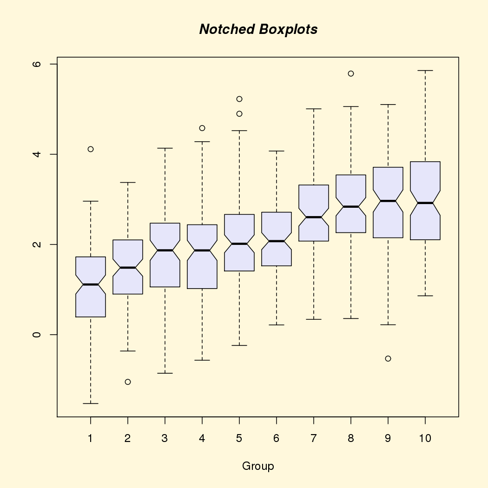
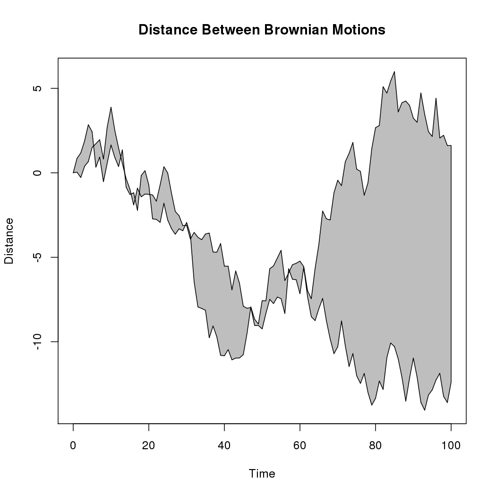
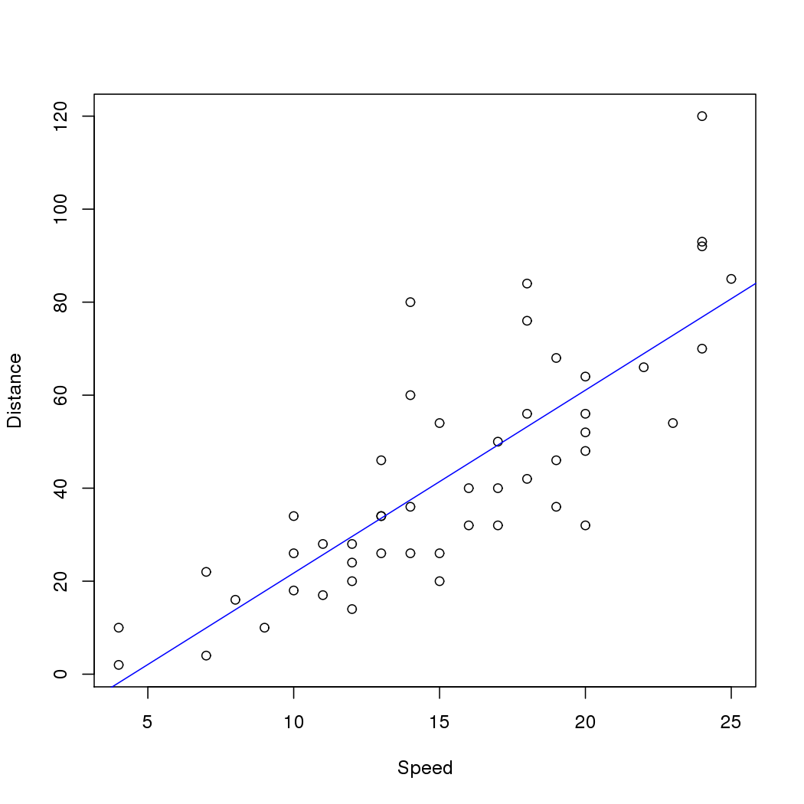
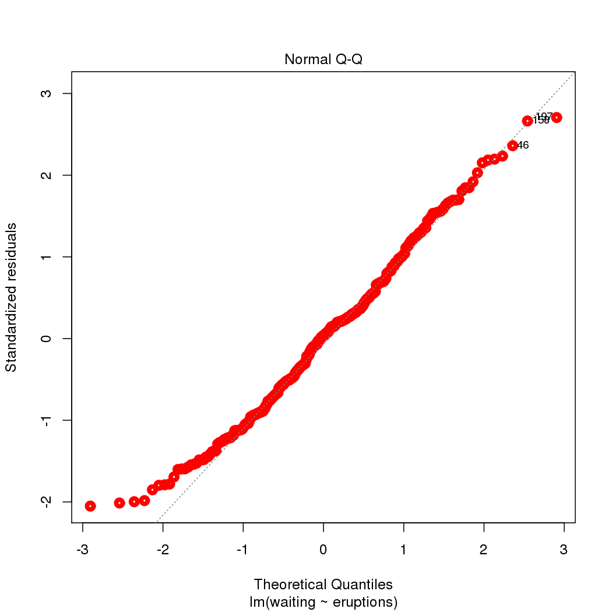
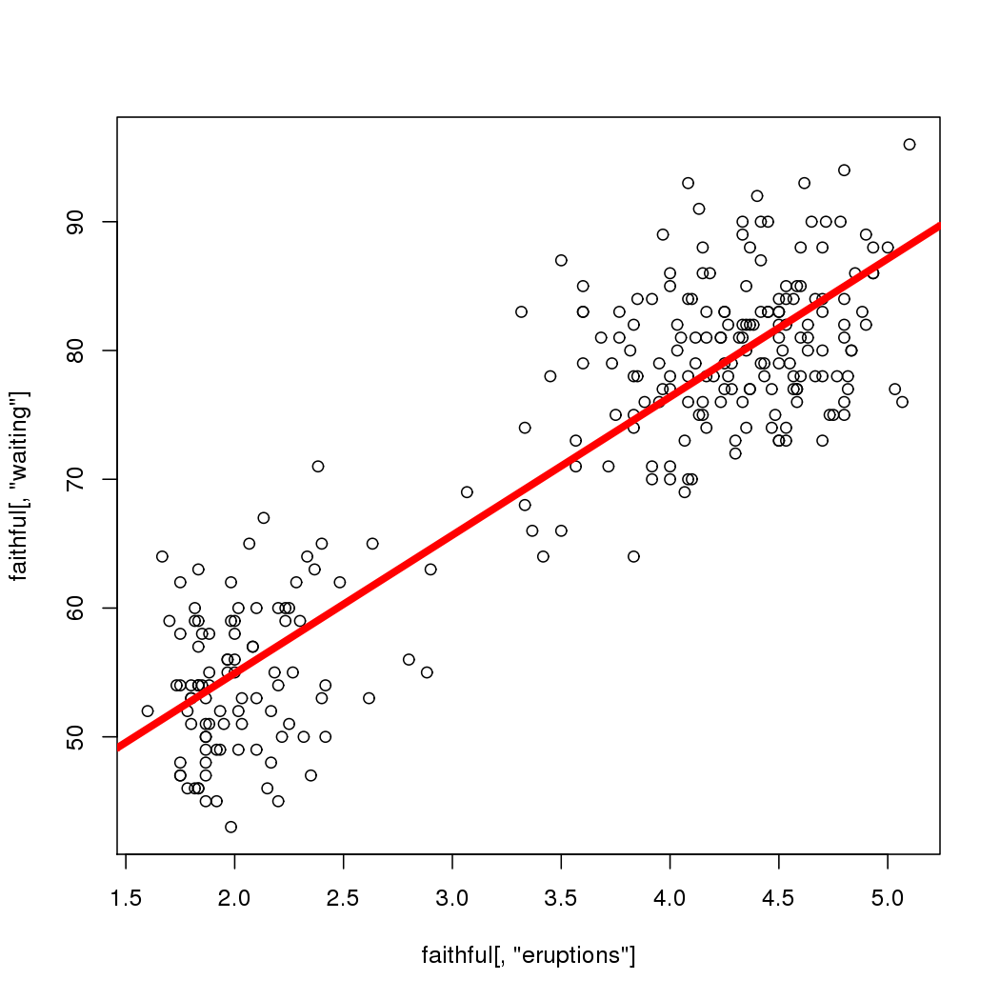
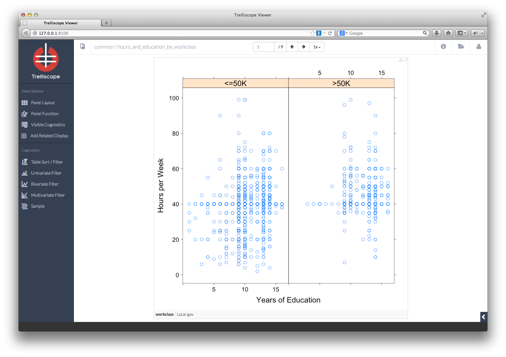
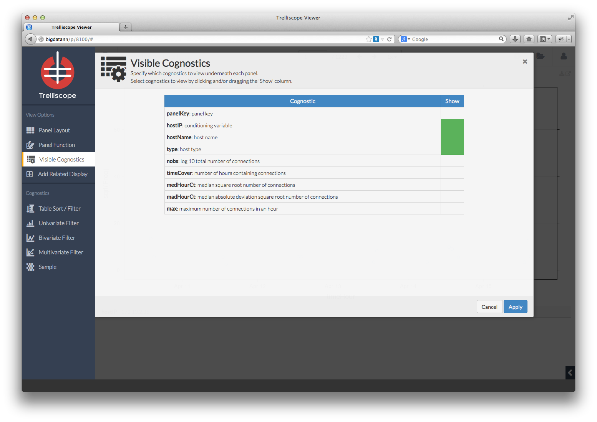
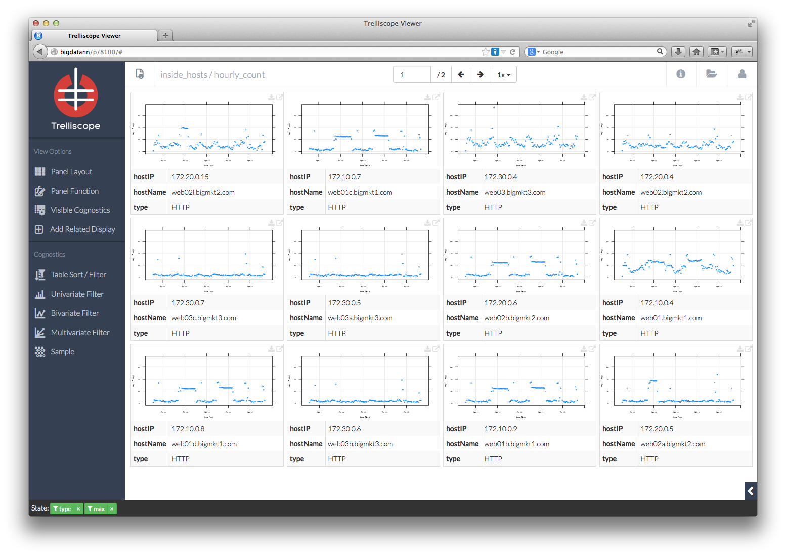

Activity 1.2: Getting Started
Activity 1.2.1: Help commands
When you don't know exactly what you're looking for, search for a topic. There are two ways to do this:
help.search("graphics")
??graphics
When you know the name of the R function, e.g. the function print(), there are two ways to do this:
help(print)
?print
Sometimes you just need a reminder about the arguments (the inputs) of a function. The args() function can help in this situation. Here are the arguments for the rnorm() function, which generates normal random variates
args(rnorm)
function (n, mean = 0, sd = 1)
NULL
Examples are often included in the documentation of functions at the bottom of the documentation. Look at:
?seq
You can execute the example code for a function all at once using the example() function:
example(seq)
seq> seq(0, 1, length.out = 11)
[1] 0.0 0.1 0.2 0.3 0.4 0.5 0.6 0.7 0.8 0.9 1.0
seq> seq(stats::rnorm(20)) # effectively 'along'
[1] 1 2 3 4 5 6 7 8 9 10 11 12 13 14 15 16 17 18 19 20
seq> seq(1, 9, by = 2) # matches 'end'
[1] 1 3 5 7 9
seq> seq(1, 9, by = pi) # stays below 'end'
[1] 1.000 4.142 7.283
seq> seq(1, 6, by = 3)
[1] 1 4
seq> seq(1.575, 5.125, by = 0.05)
[1] 1.575 1.625 1.675 1.725 1.775 1.825 1.875 1.925 1.975 2.025 2.075
[12] 2.125 2.175 2.225 2.275 2.325 2.375 2.425 2.475 2.525 2.575 2.625
[23] 2.675 2.725 2.775 2.825 2.875 2.925 2.975 3.025 3.075 3.125 3.175
[34] 3.225 3.275 3.325 3.375 3.425 3.475 3.525 3.575 3.625 3.675 3.725
[45] 3.775 3.825 3.875 3.925 3.975 4.025 4.075 4.125 4.175 4.225 4.275
[56] 4.325 4.375 4.425 4.475 4.525 4.575 4.625 4.675 4.725 4.775 4.825
[67] 4.875 4.925 4.975 5.025 5.075 5.125
seq> seq(17) # same as 1:17, or even better seq_len(17)
[1] 1 2 3 4 5 6 7 8 9 10 11 12 13 14 15 16 17
Activity 1.2.2:Demos
Some R packages include demonstrations you can run to learn about their capability. Be sure to hit "Enter" to cycle through the components of each demo
Here's one from the 'graphics' package, which gives a nice demonstration of the breadth of graphical capability in R
demo("graphics")
demo(graphics)
---- ~~~~~~~~
> # Copyright (C) 1997-2009 The R Core Team
>
> require(datasets)
> require(grDevices); require(graphics)
> ## Here is some code which illustrates some of the differences between
> ## R and S graphics capabilities. Note that colors are generally specified
> ## by a character string name (taken from the X11 rgb.txt file) and that line
> ## textures are given similarly. The parameter "bg" sets the background
> ## parameter for the plot and there is also an "fg" parameter which sets
> ## the foreground color.
>
>
> x <- stats::rnorm(50)
> opar <- par(bg = "white")
> plot(x, ann = FALSE, type = "n")
> abline(h = 0, col = gray(.90))
> lines(x, col = "green4", lty = "dotted")
> points(x, bg = "limegreen", pch = 21)
> title(main = "Simple Use of Color In a Plot",
+ xlab = "Just a Whisper of a Label",
+ col.main = "blue", col.lab = gray(.8),
+ cex.main = 1.2, cex.lab = 1.0, font.main = 4, font.lab = 3)
> ## A little color wheel. This code just plots equally spaced hues in
> ## a pie chart. If you have a cheap SVGA monitor (like me) you will
> ## probably find that numerically equispaced does not mean visually
> ## equispaced. On my display at home, these colors tend to cluster at
> ## the RGB primaries. On the other hand on the SGI Indy at work the
> ## effect is near perfect.
>
> par(bg = "gray")
> pie(rep(1,24), col = rainbow(24), radius = 0.9)
> title(main = "A Sample Color Wheel", cex.main = 1.4, font.main = 3)
> title(xlab = "(Use this as a test of monitor linearity)",
+ cex.lab = 0.8, font.lab = 3)
> ## We have already confessed to having these. This is just showing off X11
> ## color names (and the example (from the postscript manual) is pretty "cute".
>
> pie.sales <- c(0.12, 0.3, 0.26, 0.16, 0.04, 0.12)
> names(pie.sales) <- c("Blueberry", "Cherry",
+ "Apple", "Boston Cream", "Other", "Vanilla Cream")
> pie(pie.sales,
+ col = c("purple","violetred1","green3","cornsilk","cyan","white"))
> title(main = "January Pie Sales", cex.main = 1.8, font.main = 1)
> title(xlab = "(Don't try this at home kids)", cex.lab = 0.8, font.lab = 3)
> ## Boxplots: I couldn't resist the capability for filling the "box".
> ## The use of color seems like a useful addition, it focuses attention
> ## on the central bulk of the data.
>
> par(bg="cornsilk")
> n <- 10
> g <- gl(n, 100, n*100)
> x <- rnorm(n*100) + sqrt(as.numeric(g))
> boxplot(split(x,g), col="lavender", notch=TRUE)

> title(main="Notched Boxplots", xlab="Group", font.main=4, font.lab=1)
> ## An example showing how to fill between curves.
>
> par(bg="white")
> n <- 100
> x <- c(0,cumsum(rnorm(n)))
> y <- c(0,cumsum(rnorm(n)))
> xx <- c(0:n, n:0)
> yy <- c(x, rev(y))
> plot(xx, yy, type="n", xlab="Time", ylab="Distance")

> polygon(xx, yy, col="gray")
> title("Distance Between Brownian Motions")
> ## Colored plot margins, axis labels and titles. You do need to be
> ## careful with these kinds of effects. It's easy to go completely
> ## over the top and you can end up with your lunch all over the keyboard.
> ## On the other hand, my market research clients love it.
>
> x <- c(0.00, 0.40, 0.86, 0.85, 0.69, 0.48, 0.54, 1.09, 1.11, 1.73, 2.05, 2.02)
> par(bg="lightgray")
> plot(x, type="n", axes=FALSE, ann=FALSE)
> usr <- par("usr")
> rect(usr[1], usr[3], usr[2], usr[4], col="cornsilk", border="black")
> lines(x, col="blue")
> points(x, pch=21, bg="lightcyan", cex=1.25)
> axis(2, col.axis="blue", las=1)
> axis(1, at=1:12, lab=month.abb, col.axis="blue")
> box()
> title(main= "The Level of Interest in R", font.main=4, col.main="red")
> title(xlab= "1996", col.lab="red")
> ## A filled histogram, showing how to change the font used for the
> ## main title without changing the other annotation.
>
> par(bg="cornsilk")
> x <- rnorm(1000)
> hist(x, xlim=range(-4, 4, x), col="lavender", main="")
> title(main="1000 Normal Random Variates", font.main=3)
> ## A scatterplot matrix
> ## The good old Iris data (yet again)
>
> pairs(iris[1:4], main="Edgar Anderson's Iris Data", font.main=4, pch=19)
> pairs(iris[1:4], main="Edgar Anderson's Iris Data", pch=21,
+ bg = c("red", "green3", "blue")[unclass(iris$Species)])
> ## Contour plotting
> ## This produces a topographic map of one of Auckland's many volcanic "peaks".
>
> x <- 10*1:nrow(volcano)
> y <- 10*1:ncol(volcano)
> lev <- pretty(range(volcano), 10)
> par(bg = "lightcyan")
> pin <- par("pin")
> xdelta <- diff(range(x))
> ydelta <- diff(range(y))
> xscale <- pin[1]/xdelta
> yscale <- pin[2]/ydelta
> scale <- min(xscale, yscale)
> xadd <- 0.5*(pin[1]/scale - xdelta)
> yadd <- 0.5*(pin[2]/scale - ydelta)
> plot(numeric(0), numeric(0),
+ xlim = range(x)+c(-1,1)*xadd, ylim = range(y)+c(-1,1)*yadd,
+ type = "n", ann = FALSE)
> usr <- par("usr")
> rect(usr[1], usr[3], usr[2], usr[4], col="green3")
> contour(x, y, volcano, levels = lev, col="yellow", lty="solid", add=TRUE)
> box()
> title("A Topographic Map of Maunga Whau", font= 4)
> title(xlab = "Meters North", ylab = "Meters West", font= 3)
> mtext("10 Meter Contour Spacing", side=3, line=0.35, outer=FALSE,
+ at = mean(par("usr")[1:2]), cex=0.7, font=3)
> ## Conditioning plots
>
> par(bg="cornsilk")
> coplot(lat ~ long | depth, data = quakes, pch = 21, bg = "green3")
> par(opar)
And here's one about generalized linear models (glm)
demo(lm.glm)
demo(lm.glm)
---- ~~~~~~
> ### Examples from: "An Introduction to Statistical Modelling"
> ### By Annette Dobson
> ###
> ### == with some additions ==
>
> # Copyright (C) 1997-2008 The R Core Team
>
> require(stats); require(graphics)
> ## Plant Weight Data (Page 9)
> ctl <- c(4.17,5.58,5.18,6.11,4.50,4.61,5.17,4.53,5.33,5.14)
> trt <- c(4.81,4.17,4.41,3.59,5.87,3.83,6.03,4.89,4.32,4.69)
> group <- gl(2,10, labels=c("Ctl","Trt"))
> weight <- c(ctl,trt)
> anova (lm(weight~group))
Analysis of Variance Table
Response: weight
Df Sum Sq Mean Sq F value Pr(>F)
group 1 0.69 0.688 1.42 0.25
Residuals 18 8.73 0.485
> summary(lm(weight~group -1))
Call:
lm(formula = weight ~ group - 1)
Residuals:
Min 1Q Median 3Q Max
-1.0710 -0.4937 0.0685 0.2462 1.3690
Coefficients:
Estimate Std. Error t value Pr(>|t|)
groupCtl 5.03 0.22 22.9 9.5e-15 ***
groupTrt 4.66 0.22 21.2 3.6e-14 ***
---
Signif. codes: 0 '***' 0.001 '**' 0.01 '*' 0.05 '.' 0.1 ' ' 1
Residual standard error: 0.696 on 18 degrees of freedom
Multiple R-squared: 0.982, Adjusted R-squared: 0.98
F-statistic: 485 on 2 and 18 DF, p-value: <2e-16
> ## Birth Weight Data (Page 14)
> age <- c(40, 38, 40, 35, 36, 37, 41, 40, 37, 38, 40, 38,
+ 40, 36, 40, 38, 42, 39, 40, 37, 36, 38, 39, 40)
> birthw <- c(2968, 2795, 3163, 2925, 2625, 2847, 3292, 3473, 2628, 3176,
+ 3421, 2975, 3317, 2729, 2935, 2754, 3210, 2817, 3126, 2539,
+ 2412, 2991, 2875, 3231)
> sex <- gl(2,12, labels=c("M","F"))
> plot(age, birthw, col=as.numeric(sex), pch=3*as.numeric(sex),
+ main="Dobson's Birth Weight Data")
> lines(lowess(age[sex=='M'], birthw[sex=='M']), col=1)
> lines(lowess(age[sex=='F'], birthw[sex=='F']), col=2)
> legend("topleft", levels(sex), col=1:2, pch=3*(1:2), lty=1, bty="n")
> summary(l1 <- lm(birthw ~ sex + age), correlation=TRUE)
Call:
lm(formula = birthw ~ sex + age)
Residuals:
Min 1Q Median 3Q Max
-257.5 -125.3 -58.4 169.0 304.0
Coefficients:
Estimate Std. Error t value Pr(>|t|)
(Intercept) -1610.3 786.1 -2.05 0.053 .
sexF -163.0 72.8 -2.24 0.036 *
age 120.9 20.5 5.91 7.3e-06 ***
---
Signif. codes: 0 '***' 0.001 '**' 0.01 '*' 0.05 '.' 0.1 ' ' 1
Residual standard error: 177 on 21 degrees of freedom
Multiple R-squared: 0.64, Adjusted R-squared: 0.606
F-statistic: 18.7 on 2 and 21 DF, p-value: 2.19e-05
Correlation of Coefficients:
(Intercept) sexF
sexF 0.07
age -1.00 -0.12
> summary(l0 <- lm(birthw ~ sex + age -1), correlation=TRUE)
Call:
lm(formula = birthw ~ sex + age - 1)
Residuals:
Min 1Q Median 3Q Max
-257.5 -125.3 -58.4 169.0 304.0
Coefficients:
Estimate Std. Error t value Pr(>|t|)
sexM -1610.3 786.1 -2.05 0.053 .
sexF -1773.3 794.6 -2.23 0.037 *
age 120.9 20.5 5.91 7.3e-06 ***
---
Signif. codes: 0 '***' 0.001 '**' 0.01 '*' 0.05 '.' 0.1 ' ' 1
Residual standard error: 177 on 21 degrees of freedom
Multiple R-squared: 0.997, Adjusted R-squared: 0.996
F-statistic: 2.26e+03 on 3 and 21 DF, p-value: <2e-16
Correlation of Coefficients:
sexM sexF
sexF 1.00
age -1.00 -1.00
> anova(l1,l0)
Analysis of Variance Table
Model 1: birthw ~ sex + age
Model 2: birthw ~ sex + age - 1
Res.Df RSS Df Sum of Sq F Pr(>F)
1 21 658771
2 21 658771 0 -4.19e-09
> summary(li <- lm(birthw ~ sex + sex:age -1), correlation=TRUE)
Call:
lm(formula = birthw ~ sex + sex:age - 1)
Residuals:
Min 1Q Median 3Q Max
-246.7 -138.1 -39.1 176.6 274.3
Coefficients:
Estimate Std. Error t value Pr(>|t|)
sexM -1269 1115 -1.14 0.26849
sexF -2142 1164 -1.84 0.08057 .
sexM:age 112 29 3.86 0.00099 ***
sexF:age 130 30 4.35 0.00031 ***
---
Signif. codes: 0 '***' 0.001 '**' 0.01 '*' 0.05 '.' 0.1 ' ' 1
Residual standard error: 181 on 20 degrees of freedom
Multiple R-squared: 0.997, Adjusted R-squared: 0.996
F-statistic: 1.63e+03 on 4 and 20 DF, p-value: <2e-16
Correlation of Coefficients:
sexM sexF sexM:age
sexF 0.00
sexM:age -1.00 0.00
sexF:age 0.00 -1.00 0.00
> anova(li,l0)
Analysis of Variance Table
Model 1: birthw ~ sex + sex:age - 1
Model 2: birthw ~ sex + age - 1
Res.Df RSS Df Sum of Sq F Pr(>F)
1 20 652425
2 21 658771 -1 -6346 0.19 0.66
> summary(zi <- glm(birthw ~ sex + age, family=gaussian()))
Call:
glm(formula = birthw ~ sex + age, family = gaussian())
Deviance Residuals:
Min 1Q Median 3Q Max
-257.5 -125.3 -58.4 169.0 304.0
Coefficients:
Estimate Std. Error t value Pr(>|t|)
(Intercept) -1610.3 786.1 -2.05 0.053 .
sexF -163.0 72.8 -2.24 0.036 *
age 120.9 20.5 5.91 7.3e-06 ***
---
Signif. codes: 0 '***' 0.001 '**' 0.01 '*' 0.05 '.' 0.1 ' ' 1
(Dispersion parameter for gaussian family taken to be 31370)
Null deviance: 1829873 on 23 degrees of freedom
Residual deviance: 658771 on 21 degrees of freedom
AIC: 321.4
Number of Fisher Scoring iterations: 2
> summary(z0 <- glm(birthw ~ sex + age - 1, family=gaussian()))
Call:
glm(formula = birthw ~ sex + age - 1, family = gaussian())
Deviance Residuals:
Min 1Q Median 3Q Max
-257.5 -125.3 -58.4 169.0 304.0
Coefficients:
Estimate Std. Error t value Pr(>|t|)
sexM -1610.3 786.1 -2.05 0.053 .
sexF -1773.3 794.6 -2.23 0.037 *
age 120.9 20.5 5.91 7.3e-06 ***
---
Signif. codes: 0 '***' 0.001 '**' 0.01 '*' 0.05 '.' 0.1 ' ' 1
(Dispersion parameter for gaussian family taken to be 31370)
Null deviance: 213198964 on 24 degrees of freedom
Residual deviance: 658771 on 21 degrees of freedom
AIC: 321.4
Number of Fisher Scoring iterations: 2
> anova(zi, z0)
Analysis of Deviance Table
Model 1: birthw ~ sex + age
Model 2: birthw ~ sex + age - 1
Resid. Df Resid. Dev Df Deviance
1 21 658771
2 21 658771 0 5.82e-10
> summary(z.o4 <- update(z0, subset = -4))
Call:
glm(formula = birthw ~ sex + age - 1, family = gaussian(), subset = -4)
Deviance Residuals:
Min 1Q Median 3Q Max
-253.9 -129.5 -53.5 165.0 251.1
Coefficients:
Estimate Std. Error t value Pr(>|t|)
sexM -2318.0 801.6 -2.89 0.0090 **
sexF -2455.4 803.8 -3.05 0.0063 **
age 138.5 20.7 6.69 1.6e-06 ***
---
Signif. codes: 0 '***' 0.001 '**' 0.01 '*' 0.05 '.' 0.1 ' ' 1
(Dispersion parameter for gaussian family taken to be 26925)
Null deviance: 204643339 on 23 degrees of freedom
Residual deviance: 538508 on 20 degrees of freedom
AIC: 304.7
Number of Fisher Scoring iterations: 2
> summary(zz <- update(z0, birthw ~ sex+age-1 + sex:age))
Call:
glm(formula = birthw ~ sex + age + sex:age - 1, family = gaussian())
Deviance Residuals:
Min 1Q Median 3Q Max
-246.7 -138.1 -39.1 176.6 274.3
Coefficients:
Estimate Std. Error t value Pr(>|t|)
sexM -1268.7 1114.6 -1.14 0.26849
sexF -2141.7 1163.6 -1.84 0.08057 .
age 112.0 29.0 3.86 0.00099 ***
sexF:age 18.4 41.8 0.44 0.66389
---
Signif. codes: 0 '***' 0.001 '**' 0.01 '*' 0.05 '.' 0.1 ' ' 1
(Dispersion parameter for gaussian family taken to be 32621)
Null deviance: 213198964 on 24 degrees of freedom
Residual deviance: 652425 on 20 degrees of freedom
AIC: 323.2
Number of Fisher Scoring iterations: 2
> anova(z0,zz)
Analysis of Deviance Table
Model 1: birthw ~ sex + age - 1
Model 2: birthw ~ sex + age + sex:age - 1
Resid. Df Resid. Dev Df Deviance
1 21 658771
2 20 652425 1 6346
> ## Poisson Regression Data (Page 42)
> x <- c(-1,-1,0,0,0,0,1,1,1)
> y <- c(2,3,6,7,8,9,10,12,15)
> summary(glm(y~x, family=poisson(link="identity")))
Call:
glm(formula = y ~ x, family = poisson(link = "identity"))
Deviance Residuals:
Min 1Q Median 3Q Max
-0.702 -0.338 -0.111 0.296 0.718
Coefficients:
Estimate Std. Error z value Pr(>|z|)
(Intercept) 7.452 0.884 8.43 < 2e-16 ***
x 4.935 1.089 4.53 5.9e-06 ***
---
Signif. codes: 0 '***' 0.001 '**' 0.01 '*' 0.05 '.' 0.1 ' ' 1
(Dispersion parameter for poisson family taken to be 1)
Null deviance: 18.4206 on 8 degrees of freedom
Residual deviance: 1.8947 on 7 degrees of freedom
AIC: 40.01
Number of Fisher Scoring iterations: 3
> ## Calorie Data (Page 45)
> calorie <- data.frame(
+ carb = c(33,40,37,27,30,43,34,48,30,38,
+ 50,51,30,36,41,42,46,24,35,37),
+ age = c(33,47,49,35,46,52,62,23,32,42,
+ 31,61,63,40,50,64,56,61,48,28),
+ wgt = c(100, 92,135,144,140,101, 95,101, 98,105,
+ 108, 85,130,127,109,107,117,100,118,102),
+ prot = c(14,15,18,12,15,15,14,17,15,14,
+ 17,19,19,20,15,16,18,13,18,14))
> summary(lmcal <- lm(carb~age+wgt+prot, data= calorie))
Call:
lm(formula = carb ~ age + wgt + prot, data = calorie)
Residuals:
Min 1Q Median 3Q Max
-10.34 -4.82 0.99 3.85 7.91
Coefficients:
Estimate Std. Error t value Pr(>|t|)
(Intercept) 36.9601 13.0713 2.83 0.0121 *
age -0.1137 0.1093 -1.04 0.3139
wgt -0.2280 0.0833 -2.74 0.0146 *
prot 1.9577 0.6349 3.08 0.0071 **
---
Signif. codes: 0 '***' 0.001 '**' 0.01 '*' 0.05 '.' 0.1 ' ' 1
Residual standard error: 5.96 on 16 degrees of freedom
Multiple R-squared: 0.481, Adjusted R-squared: 0.383
F-statistic: 4.93 on 3 and 16 DF, p-value: 0.013
> ## Extended Plant Data (Page 59)
> ctl <- c(4.17,5.58,5.18,6.11,4.50,4.61,5.17,4.53,5.33,5.14)
> trtA <- c(4.81,4.17,4.41,3.59,5.87,3.83,6.03,4.89,4.32,4.69)
> trtB <- c(6.31,5.12,5.54,5.50,5.37,5.29,4.92,6.15,5.80,5.26)
> group <- gl(3, length(ctl), labels=c("Ctl","A","B"))
> weight <- c(ctl,trtA,trtB)
> anova(lmwg <- lm(weight~group))
Analysis of Variance Table
Response: weight
Df Sum Sq Mean Sq F value Pr(>F)
group 2 3.77 1.883 4.85 0.016 *
Residuals 27 10.49 0.389
---
Signif. codes: 0 '***' 0.001 '**' 0.01 '*' 0.05 '.' 0.1 ' ' 1
> summary(lmwg)
Call:
lm(formula = weight ~ group)
Residuals:
Min 1Q Median 3Q Max
-1.071 -0.418 -0.006 0.263 1.369
Coefficients:
Estimate Std. Error t value Pr(>|t|)
(Intercept) 5.032 0.197 25.53 <2e-16 ***
groupA -0.371 0.279 -1.33 0.194
groupB 0.494 0.279 1.77 0.088 .
---
Signif. codes: 0 '***' 0.001 '**' 0.01 '*' 0.05 '.' 0.1 ' ' 1
Residual standard error: 0.623 on 27 degrees of freedom
Multiple R-squared: 0.264, Adjusted R-squared: 0.21
F-statistic: 4.85 on 2 and 27 DF, p-value: 0.0159
> coef(lmwg)
(Intercept) groupA groupB
5.032 -0.371 0.494
> coef(summary(lmwg))#- incl. std.err, t- and P- values.
Estimate Std. Error t value Pr(>|t|)
(Intercept) 5.032 0.1971 25.527 1.937e-20
groupA -0.371 0.2788 -1.331 1.944e-01
groupB 0.494 0.2788 1.772 8.768e-02
> ## Fictitious Anova Data (Page 64)
> y <- c(6.8,6.6,5.3,6.1,7.5,7.4,7.2,6.5,7.8,9.1,8.8,9.1)
> a <- gl(3,4)
> b <- gl(2,2, length(a))
> anova(z <- lm(y~a*b))
Analysis of Variance Table
Response: y
Df Sum Sq Mean Sq F value Pr(>F)
a 2 12.74 6.37 25.82 0.0011 **
b 1 0.40 0.40 1.64 0.2482
a:b 2 1.21 0.60 2.45 0.1672
Residuals 6 1.48 0.25
---
Signif. codes: 0 '***' 0.001 '**' 0.01 '*' 0.05 '.' 0.1 ' ' 1
> ## Achievement Scores (Page 70)
> y <- c(6,4,5,3,4,3,6, 8,9,7,9,8,5,7, 6,7,7,7,8,5,7)
> x <- c(3,1,3,1,2,1,4, 4,5,5,4,3,1,2, 3,2,2,3,4,1,4)
> m <- gl(3,7)
> anova(z <- lm(y~x+m))
Analysis of Variance Table
Response: y
Df Sum Sq Mean Sq F value Pr(>F)
x 1 36.6 36.6 60.4 5.4e-07 ***
m 2 16.9 8.5 14.0 0.00026 ***
Residuals 17 10.3 0.6
---
Signif. codes: 0 '***' 0.001 '**' 0.01 '*' 0.05 '.' 0.1 ' ' 1
> ## Beetle Data (Page 78)
> dose <- c(1.6907, 1.7242, 1.7552, 1.7842, 1.8113, 1.8369, 1.861, 1.8839)
> x <- c( 6, 13, 18, 28, 52, 53, 61, 60)
> n <- c(59, 60, 62, 56, 63, 59, 62, 60)
> dead <- cbind(x, n-x)
> summary( glm(dead ~ dose, family=binomial(link=logit)))
Call:
glm(formula = dead ~ dose, family = binomial(link = logit))
Deviance Residuals:
Min 1Q Median 3Q Max
-1.594 -0.394 0.833 1.259 1.594
Coefficients:
Estimate Std. Error z value Pr(>|z|)
(Intercept) -60.72 5.18 -11.7 <2e-16 ***
dose 34.27 2.91 11.8 <2e-16 ***
---
Signif. codes: 0 '***' 0.001 '**' 0.01 '*' 0.05 '.' 0.1 ' ' 1
(Dispersion parameter for binomial family taken to be 1)
Null deviance: 284.202 on 7 degrees of freedom
Residual deviance: 11.232 on 6 degrees of freedom
AIC: 41.43
Number of Fisher Scoring iterations: 4
> summary( glm(dead ~ dose, family=binomial(link=probit)))
Call:
glm(formula = dead ~ dose, family = binomial(link = probit))
Deviance Residuals:
Min 1Q Median 3Q Max
-1.57 -0.47 0.75 1.06 1.34
Coefficients:
Estimate Std. Error z value Pr(>|z|)
(Intercept) -34.94 2.65 -13.2 <2e-16 ***
dose 19.73 1.49 13.3 <2e-16 ***
---
Signif. codes: 0 '***' 0.001 '**' 0.01 '*' 0.05 '.' 0.1 ' ' 1
(Dispersion parameter for binomial family taken to be 1)
Null deviance: 284.20 on 7 degrees of freedom
Residual deviance: 10.12 on 6 degrees of freedom
AIC: 40.32
Number of Fisher Scoring iterations: 4
> summary(z <- glm(dead ~ dose, family=binomial(link=cloglog)))
Call:
glm(formula = dead ~ dose, family = binomial(link = cloglog))
Deviance Residuals:
Min 1Q Median 3Q Max
-0.8033 -0.5513 0.0309 0.3832 1.2888
Coefficients:
Estimate Std. Error z value Pr(>|z|)
(Intercept) -39.57 3.24 -12.2 <2e-16 ***
dose 22.04 1.80 12.2 <2e-16 ***
---
Signif. codes: 0 '***' 0.001 '**' 0.01 '*' 0.05 '.' 0.1 ' ' 1
(Dispersion parameter for binomial family taken to be 1)
Null deviance: 284.2024 on 7 degrees of freedom
Residual deviance: 3.4464 on 6 degrees of freedom
AIC: 33.64
Number of Fisher Scoring iterations: 4
> anova(z, update(z, dead ~ dose -1))
Analysis of Deviance Table
Model 1: dead ~ dose
Model 2: dead ~ dose - 1
Resid. Df Resid. Dev Df Deviance
1 6 3.4
2 7 285.2 -1 -282
> ## Anther Data (Page 84)
> ## Note that the proportions below are not exactly
> ## in accord with the sample sizes quoted below.
> ## In particular, the value 0.555 does not seem sensible.
> ## [MM: huh? round(round(n*p)/n, 3) looks almost exactly like "p" !]
> n <- c(102, 99, 108, 76, 81, 90)
> p <- c(0.539,0.525,0.528,0.724,0.617,0.555)
> x <- round(n*p)
> ## x <- n*p
> y <- cbind(x,n-x)
> f <- rep(c(40,150,350),2)
> (g <- gl(2,3))
[1] 1 1 1 2 2 2
Levels: 1 2
> summary(glm(y ~ g*f, family=binomial(link="logit")))
Call:
glm(formula = y ~ g * f, family = binomial(link = "logit"))
Deviance Residuals:
1 2 3 4 5 6
0.0827 -0.1300 0.0441 0.4232 -0.6008 0.1952
Coefficients:
Estimate Std. Error z value Pr(>|z|)
(Intercept) 0.145672 0.197545 0.74 0.461
g2 0.796314 0.312505 2.55 0.011 *
f -0.000123 0.000878 -0.14 0.889
g2:f -0.002049 0.001348 -1.52 0.129
---
Signif. codes: 0 '***' 0.001 '**' 0.01 '*' 0.05 '.' 0.1 ' ' 1
(Dispersion parameter for binomial family taken to be 1)
Null deviance: 10.45197 on 5 degrees of freedom
Residual deviance: 0.60387 on 2 degrees of freedom
AIC: 38.17
Number of Fisher Scoring iterations: 3
> summary(glm(y ~ g + f, family=binomial(link="logit")))
Call:
glm(formula = y ~ g + f, family = binomial(link = "logit"))
Deviance Residuals:
1 2 3 4 5 6
-0.551 -0.278 0.797 1.156 -0.369 -0.658
Coefficients:
Estimate Std. Error z value Pr(>|z|)
(Intercept) 0.306643 0.167629 1.83 0.067 .
g2 0.405554 0.174560 2.32 0.020 *
f -0.000997 0.000665 -1.50 0.134
---
Signif. codes: 0 '***' 0.001 '**' 0.01 '*' 0.05 '.' 0.1 ' ' 1
(Dispersion parameter for binomial family taken to be 1)
Null deviance: 10.4520 on 5 degrees of freedom
Residual deviance: 2.9218 on 3 degrees of freedom
AIC: 38.49
Number of Fisher Scoring iterations: 3
> ## The "final model"
> summary(glm.p84 <- glm(y~g, family=binomial(link="logit")))
Call:
glm(formula = y ~ g, family = binomial(link = "logit"))
Deviance Residuals:
1 2 3 4 5 6
0.1715 -0.1095 -0.0618 1.7721 -0.1904 -1.3969
Coefficients:
Estimate Std. Error z value Pr(>|z|)
(Intercept) 0.123 0.114 1.08 0.280
g2 0.399 0.174 2.29 0.022 *
---
Signif. codes: 0 '***' 0.001 '**' 0.01 '*' 0.05 '.' 0.1 ' ' 1
(Dispersion parameter for binomial family taken to be 1)
Null deviance: 10.452 on 5 degrees of freedom
Residual deviance: 5.173 on 4 degrees of freedom
AIC: 38.74
Number of Fisher Scoring iterations: 3
> op <- par(mfrow = c(2,2), oma = c(0,0,1,0))
> plot(glm.p84) # well ?
> par(op)
> ## Tumour Data (Page 92)
> counts <- c(22,2,10,16,54,115,19,33,73,11,17,28)
> type <- gl(4,3,12,labels=c("freckle","superficial","nodular","indeterminate"))
> site <- gl(3,1,12,labels=c("head/neck","trunk","extremities"))
> data.frame(counts,type,site)
counts type site
1 22 freckle head/neck
2 2 freckle trunk
3 10 freckle extremities
4 16 superficial head/neck
5 54 superficial trunk
6 115 superficial extremities
7 19 nodular head/neck
8 33 nodular trunk
9 73 nodular extremities
10 11 indeterminate head/neck
11 17 indeterminate trunk
12 28 indeterminate extremities
> summary(z <- glm(counts ~ type + site, family=poisson()))
Call:
glm(formula = counts ~ type + site, family = poisson())
Deviance Residuals:
Min 1Q Median 3Q Max
-3.045 -1.074 0.130 0.586 5.135
Coefficients:
Estimate Std. Error z value Pr(>|z|)
(Intercept) 1.754 0.204 8.60 < 2e-16 ***
typesuperficial 1.694 0.187 9.08 < 2e-16 ***
typenodular 1.302 0.193 6.73 1.7e-11 ***
typeindeterminate 0.499 0.217 2.30 0.0217 *
sitetrunk 0.444 0.155 2.86 0.0043 **
siteextremities 1.201 0.138 8.68 < 2e-16 ***
---
Signif. codes: 0 '***' 0.001 '**' 0.01 '*' 0.05 '.' 0.1 ' ' 1
(Dispersion parameter for poisson family taken to be 1)
Null deviance: 295.203 on 11 degrees of freedom
Residual deviance: 51.795 on 6 degrees of freedom
AIC: 122.9
Number of Fisher Scoring iterations: 5
> ## Randomized Controlled Trial (Page 93)
> counts <- c(18,17,15, 20,10,20, 25,13,12)
> outcome <- gl(3, 1, length(counts))
> treatment <- gl(3, 3)
> summary(z <- glm(counts ~ outcome + treatment, family=poisson()))
Call:
glm(formula = counts ~ outcome + treatment, family = poisson())
Deviance Residuals:
1 2 3 4 5 6 7 8
-0.6712 0.9627 -0.1696 -0.2200 -0.9555 1.0494 0.8472 -0.0917
9
-0.9666
Coefficients:
Estimate Std. Error z value Pr(>|z|)
(Intercept) 3.04e+00 1.71e-01 17.81 <2e-16 ***
outcome2 -4.54e-01 2.02e-01 -2.25 0.025 *
outcome3 -2.93e-01 1.93e-01 -1.52 0.128
treatment2 1.34e-15 2.00e-01 0.00 1.000
treatment3 1.42e-15 2.00e-01 0.00 1.000
---
Signif. codes: 0 '***' 0.001 '**' 0.01 '*' 0.05 '.' 0.1 ' ' 1
(Dispersion parameter for poisson family taken to be 1)
Null deviance: 10.5814 on 8 degrees of freedom
Residual deviance: 5.1291 on 4 degrees of freedom
AIC: 56.76
Number of Fisher Scoring iterations: 4
> ## Peptic Ulcers and Blood Groups
> counts <- c(579, 4219, 911, 4578, 246, 3775, 361, 4532, 291, 5261, 396, 6598)
> group <- gl(2, 1, 12, labels=c("cases","controls"))
> blood <- gl(2, 2, 12, labels=c("A","O"))
> city <- gl(3, 4, 12, labels=c("London","Manchester","Newcastle"))
> cbind(group, blood, city, counts) # gives internal codes for the factors
group blood city counts
[1,] 1 1 1 579
[2,] 2 1 1 4219
[3,] 1 2 1 911
[4,] 2 2 1 4578
[5,] 1 1 2 246
[6,] 2 1 2 3775
[7,] 1 2 2 361
[8,] 2 2 2 4532
[9,] 1 1 3 291
[10,] 2 1 3 5261
[11,] 1 2 3 396
[12,] 2 2 3 6598
> summary(z1 <- glm(counts ~ group*(city + blood), family=poisson()))
Call:
glm(formula = counts ~ group * (city + blood), family = poisson())
Deviance Residuals:
1 2 3 4 5 6 7 8 9
-0.752 3.018 0.610 -2.814 0.171 -0.434 -0.141 0.398 0.932
10 11 12
-2.269 -0.774 2.065
Coefficients:
Estimate Std. Error z value Pr(>|z|)
(Intercept) 6.3924 0.0348 183.92 < 2e-16 ***
groupcontrols 1.9081 0.0369 51.69 < 2e-16 ***
cityManchester -0.8980 0.0482 -18.65 < 2e-16 ***
cityNewcastle -0.7742 0.0461 -16.79 < 2e-16 ***
bloodO 0.4019 0.0387 10.39 < 2e-16 ***
groupcontrols:cityManchester 0.8407 0.0505 16.64 < 2e-16 ***
groupcontrols:cityNewcastle 1.0729 0.0482 22.25 < 2e-16 ***
groupcontrols:bloodO -0.2321 0.0404 -5.74 9.5e-09 ***
---
Signif. codes: 0 '***' 0.001 '**' 0.01 '*' 0.05 '.' 0.1 ' ' 1
(Dispersion parameter for poisson family taken to be 1)
Null deviance: 26717.157 on 11 degrees of freedom
Residual deviance: 29.241 on 4 degrees of freedom
AIC: 154.3
Number of Fisher Scoring iterations: 3
> summary(z2 <- glm(counts ~ group*city + blood, family=poisson()),
+ correlation = TRUE)
Call:
glm(formula = counts ~ group * city + blood, family = poisson())
Deviance Residuals:
1 2 3 4 5 6 7 8 9
-3.769 3.717 3.281 -3.442 -1.767 0.239 1.557 -0.217 -1.146
10 11 12
-1.469 1.022 1.328
Coefficients:
Estimate Std. Error z value Pr(>|z|)
(Intercept) 6.5139 0.0266 244.6 <2e-16 ***
groupcontrols 1.7756 0.0280 63.4 <2e-16 ***
cityManchester -0.8980 0.0482 -18.6 <2e-16 ***
cityNewcastle -0.7742 0.0461 -16.8 <2e-16 ***
bloodO 0.1899 0.0113 16.8 <2e-16 ***
groupcontrols:cityManchester 0.8407 0.0505 16.6 <2e-16 ***
groupcontrols:cityNewcastle 1.0729 0.0482 22.2 <2e-16 ***
---
Signif. codes: 0 '***' 0.001 '**' 0.01 '*' 0.05 '.' 0.1 ' ' 1
(Dispersion parameter for poisson family taken to be 1)
Null deviance: 26717.157 on 11 degrees of freedom
Residual deviance: 62.558 on 5 degrees of freedom
AIC: 185.6
Number of Fisher Scoring iterations: 4
Correlation of Coefficients:
(Intercept) groupcontrols cityManchester
groupcontrols -0.90
cityManchester -0.52 0.50
cityNewcastle -0.55 0.52 0.30
bloodO -0.23 0.00 0.00
groupcontrols:cityManchester 0.50 -0.55 -0.95
groupcontrols:cityNewcastle 0.52 -0.58 -0.29
cityNewcastle bloodO
groupcontrols
cityManchester
cityNewcastle
bloodO 0.00
groupcontrols:cityManchester -0.29 0.00
groupcontrols:cityNewcastle -0.96 0.00
groupcontrols:cityManchester
groupcontrols
cityManchester
cityNewcastle
bloodO
groupcontrols:cityManchester
groupcontrols:cityNewcastle 0.32
> anova(z2, z1, test = "Chisq")
Analysis of Deviance Table
Model 1: counts ~ group * city + blood
Model 2: counts ~ group * (city + blood)
Resid. Df Resid. Dev Df Deviance Pr(>Chi)
1 5 62.6
2 4 29.2 1 33.3 7.8e-09 ***
---
Signif. codes: 0 '***' 0.001 '**' 0.01 '*' 0.05 '.' 0.1 ' ' 1
Activity 1.2.3: R as a calculator
Addition
7 + 3
[1] 10
Subtraction
7 - 3
[1] 4
Multiplication
7 * 3
[1] 21
Division
7 / 3
[1] 2.333
Integer division
7 %/% 3
[1] 2
Division remainder (the modulo)
7 %% 3
[1] 1
exponentiation
exp(7)
[1] 1097
Natural logarithm
log(7)
[1] 1.946
Base 10 log
log10(1000)
[1] 3
Examples of common mathematical functions and constants
sqrt(16)
[1] 4
cos(pi)
[1] -1
Powers: 2 to the 5th
2^5
[1] 32
Large and small numbers
1.7e+05
[1] 170000
1.7e-03
[1] 0.0017
And there are numerous statistical functions. For example: The probability a standard normal random variable takes a value of 1.96 or lower:
pnorm(1.96)
[1] 0.975
And the probability of 4 heads in 12 fair coin flips
dbinom(4, 12, 0.5)
[1] 0.1208
And, best of all, it handles division by 0 gracefully :)
1 / 0
[1] Inf
Activity 1.3: Data Structures
Activity 1.3.1: Numeric vectors
Numeric vectors are the fundamental building blocks of R. Most of the techniques shown in this activity apply to any type of vector, be it a numeric, character, or logical vector.
Suppose you wish to create an object 'x' and assign it a value of 5. There are two ways to do this:
x = 5
x <- 5
Display the object:
x
[1] 5
Note that R is CaSe SenSiTivE!
w <- 10
W <- 12
The cat() function prints text to the screen, which is useful for writing. messages
cat("Little w =", w, "is different than big W =", W, "\n")
Little w = 10 is different than big W = 12
You can create a numeric vector from 1 to 6 in three different ways.
x0 <- c(1, 2, 3, 4, 5, 6)
x1 <- seq(1, 6, by = 1)
x2 <- 1:6
View these three objects:
x0
[1] 1 2 3 4 5 6
x1
[1] 1 2 3 4 5 6
x2
[1] 1 2 3 4 5 6
Here's a sequence from 1 to 22 stepping by 3.
x <- seq(1, 22, by = 3)
x
[1] 1 4 7 10 13 16 19 22
This operation will square the elements of x. This is a 'vectorized' calculation. This means it squares each element indvidually and so there is no need to loop over each element.
y <- x^2
y
[1] 1 16 49 100 169 256 361 484
Assign a value to m:
m = 0.5
Another vectorized calculation: multiple each element of y by m:
y * m
[1] 0.5 8.0 24.5 50.0 84.5 128.0 180.5 242.0
Take the natural logarithm of each element of y:
log(y)
[1] 0.000 2.773 3.892 4.605 5.130 5.545 5.889 6.182
Add two sequences together, elementwise:
1:3 + 2:4
[1] 3 5 7
Suppose a vector is so long that we don't want to display all of it. Let's create a vector of 500 random numbers from a normal distribution with mean of 3 and standard deviation of 2.
x <- rnorm(500, mean = 3, sd = 2)
The str() (structure) function tells us what type of object x is and provides some examples of the first few values.
str(x)
num [1:500] 2.91 6.65 3.89 3.78 3.5 ...
The length() function returns the number of elements in ßx.
length(x)
[1] 500
We can calculate the sum, mean, max, min, and standard deviation.
sum(x)
[1] 1537
mean(x)
[1] 3.073
max(x)
[1] 8.285
min(x)
[1] -3.555
sd(x)
[1] 2.001
The summary() function provides summary statistics.
summary(x)
Min. 1st Qu. Median Mean 3rd Qu. Max.
-3.56 1.95 3.14 3.07 4.44 8.28
The head() and tail() functions shows the first or last 6 elements, respectively.
head(x)
[1] 2.912 6.651 3.893 3.777 3.500 1.876
tail(x)
[1] 3.589 6.466 2.226 0.181 2.955 2.131
We can easily extract elements of vectors. For example, let's grab the 7th element of y:
y <- 1:10
y[7]
[1] 7
Or let's select the 1st, 3rd, and 5th elements of y:
y[c(1,3,5)]
[1] 1 3 5
Or the 6th through 8th elements:
y[6:8]
[1] 6 7 8
To select elements that are less than 4, we first make an indicator, which is a vector of TRUE and FALSE elements indicating whether the elements are less than 4.
indicator <- y < 4
indicator
[1] TRUE TRUE TRUE FALSE FALSE FALSE FALSE FALSE FALSE FALSE
And now we select elements that are less than 4 from y:
y[indicator]
[1] 1 2 3
Another useful tool for generating vectors is the rep() function. A
vector of seven 1's:
z <- rep(1, 7)
z
[1] 1 1 1 1 1 1 1
A sequence of 1 to 5, repeated twice
rep(1:5, 2)
[1] 1 2 3 4 5 1 2 3 4 5
Another style of repeating, elementwise
rep(1:5, each = 2)
[1] 1 1 2 2 3 3 4 4 5 5
Exercise 1.3.1: Numeric Vectors
1) Create a vector from 3 to 11, in steps of 2
2) Create another vector from 12 to 4 in steps of -2
3) Display the last 2 elements of the second vector
4) Calculate the mean of the element-wise product of these two vectors
Activity 1.3.2: Character vectors
Character vectors allow you to store non-numeric data. They are used in R all the time.
We refer to vectors of characters as strings. To create a character vector, we do the following:
x = c("this", "that", "those")
x
[1] "this" "that" "those"
Extracting characters is the same as extracting elements.
x[2:3]
[1] "that" "those"
There are numerous functions for parsing, searching, and connecting text. For example:
y <- c("cat", "dog", "fish")
paste(x, y)
[1] "this cat" "that dog" "those fish"
Or we can extract parts of the strings, known as substrings. In this case, we extract the first 3 letters of each element, beginning at position 1, ending at position 3.
substr(x, 1, 3)
[1] "thi" "tha" "tho"
Count the number of characters in each element:
nchar(x)
[1] 4 4 5
Search for the string "s" in each element of x and return a logical vector.
sIndicator <- grepl("s", x)
sIndicator
[1] TRUE FALSE TRUE
Select only those words that have "s"
x[sIndicator]
[1] "this" "those"
We can test if a value is in the string using %in%. Here, we use an indicator
variable to subset the original vector.
mammalIndicator <- y %in% c("cat", "dog")
mammalIndicator
[1] TRUE TRUE FALSE
Now select the mammals from y:
y[mammalIndicator]
[1] "cat" "dog"
Regarding quotes: R will accept double or single quotes for all character strings. Use both in the same statement if you need to nest them.
x <- "A string with 'inner quotes'"
x
[1] "A string with 'inner quotes'"
cat(x, "\n")
A string with 'inner quotes'
Exercise 1.3.2: Character vectors
1) Create a character vector consisting of nouns (of the length of your choosing)
2) Create a second character vector of same length with verbs
3) Paste the two vectors together
4) Count the total number of characters in the entire noun
vector. Hint, use the sum function
Activity 1.3.3: Logical vectors
Logical, or boolean, vectors are used to select subsets of data and define logical expressions in R programming.
To create a logical vector:
z <- c(TRUE, FALSE, TRUE, TRUE)
z
[1] TRUE FALSE TRUE TRUE
Or, equivalently:
z <- c(T, F, T, T)
z
[1] TRUE FALSE TRUE TRUE
We can select elements like any other vector.
z[c(2,4)]
[1] FALSE TRUE
The which() function returns the indexes of a logical vector that are TRUE.
which(z)
[1] 1 3 4
And we can summarize over each element in the vector. For example, the
any() function returns TRUE if any elements are TRUE.
any(z)
[1] TRUE
And the all() function returns TRUE if all elments are TRUE.
all(z)
[1] FALSE
We can also count the number of true values in a logical vector using the
sum() function.
sum(z)
[1] 3
And we can negate a logical vector:
!z
[1] FALSE TRUE FALSE FALSE
Let's create another logical vector, which will be TRUE for the elements of 1,2,3,4 that are <= 2.
y <- 1:4 <= 2
y
[1] TRUE TRUE FALSE FALSE
We can perform 'and' comparisons betwen two logical vectors, elementwise:
z & y
[1] TRUE FALSE FALSE FALSE
As well as 'or' comparisons, elementwise:
z | y
[1] TRUE TRUE TRUE TRUE
Exercise 1.3.3: Logical vectors
1) Create random numeric vector of length 1000 with values uniformly chosen between 0 and 1. Hint: use the 'runif' function
2) Count the number of elements in the vector that fall in the interval [0.2, 0.8]. On average, it should be 600
Activity 1.3.4: Integer and complex vectors
For most applications in R, it will likely not make a difference if you represent integer values as 'numeric'. The difference between the 'integer' and 'numeric' classes is that objects of class 'integer' are coded as type 'int' in the primitive C or Fortran code that is running underneath the R interpeter, and objects of class 'numeric' are usually typed as 'double'. But it might be important to you in some cases.
Notice this results in an integer:
x <- 1:3
str(x)
int [1:3] 1 2 3
is.integer(x)
[1] TRUE
Whereas these end up being numeric:
str(c(1, 2, 3))
num [1:3] 1 2 3
str(seq(1, 3, 1))
num [1:3] 1 2 3
There are two fullproof ways to create integer vectors. Here are two identical approaches:
x1 <- as.integer(c(1, 5, -2))
x2 <- c(1L, 5L, -2L)
x1
[1] 1 5 -2
x2
[1] 1 5 -2
Note how they are identical (not juse in value, but also in type).
identical(x1, x2)
[1] TRUE
Whereas if we create a numeric vector, they are not identical because x1 is of class 'integer' and x3 is of class 'numeric'.
x3 <- c(1, 2, 3)
identical(x1, x3)
[1] FALSE
R can also store and perform mathematical operations with complex values
(a + bi). Here's a complex vector:
v1 <- complex(real = 1:3, imaginary = 4:6)
v1
[1] 1+4i 2+5i 3+6i
str(v1)
cplx [1:3] 1+4i 2+5i 3+6i
And here are some operations on the complex vector, the sum, and extracting the real and imaginary portions of the vector:
sum(v1)
[1] 6+15i
Re(v1)
[1] 1 2 3
Im(v1)
[1] 4 5 6
Type ?complex in R for more details.
Activity 1.3.5: Named vectors
The elements of vectors in R can be named for convenience. Here's how to create a named vector.
aNamedVec <- c(type = 1, count = 7, max = 10)
aNamedVec
type count max
1 7 10
You can also assign names using quoted strings, which can include spaces or special characters:
bNamedVec <- c("a type" = 1, "b%type" = 7)
bNamedVec
a type b%type
1 7
And you can extract elements of a named vector by the names. Notice how the name is displayed, along with the value of the vector.
aNamedVec["type"]
type
1
Suppose you would like extract the element without the name. You can do this using the 'double brace' syntax:
aNamedVec[["type"]]
[1] 1
And you can extract more than one element:
aNamedVec[c("type", "max")]
type max
1 10
But attempting to strip the names when you extract more than one element doesn't work:
try(aNamedVec[[c("type", "max")]])
Speaking of removing names, here's how you can do that:
names(aNamedVec) <- NULL
aNamedVec
[1] 1 7 10
And you can use names() to put the names back in again, or to change the names.
names(aNamedVec) <- c("type1", "count1", "max1")
aNamedVec
type1 count1 max1
1 7 10
And you can extract the names as well.
names(aNamedVec)
[1] "type1" "count1" "max1"
These naming principles apply to any type of vector: integer, numeric, character, logical, or complex.
Exercise 1.3.5: Named vectors
1) Create a named character vector of length 3
2) Create a second named logical vector of length 3
3) Switch the names of the 2 vectors
Activity 1.3.6: Data frames
Data frames consist of rows and columns (like a spreadsheet). They are the most common way to store data in R. Columns can be of any type: numeric, character, logical, complex, or factors. (We haven't learned about factors--that's a more advanced topic).
Here's how we could manually create a simple data frame.
df <- data.frame(a = 1:6, b = letters[1:6],
c = rep(c(TRUE, FALSE), each = 3))
df
a b c
1 1 a TRUE
2 2 b TRUE
3 3 c TRUE
4 4 d FALSE
5 5 e FALSE
6 6 f FALSE
And here's a more interesting data frame with the specs of various automobiles that is included in the datasets package that comes with R:
mtcars
mpg cyl disp hp drat wt qsec vs am gear carb
Mazda RX4 21.0 6 160.0 110 3.90 2.620 16.46 0 1 4 4
Mazda RX4 Wag 21.0 6 160.0 110 3.90 2.875 17.02 0 1 4 4
Datsun 710 22.8 4 108.0 93 3.85 2.320 18.61 1 1 4 1
Hornet 4 Drive 21.4 6 258.0 110 3.08 3.215 19.44 1 0 3 1
Hornet Sportabout 18.7 8 360.0 175 3.15 3.440 17.02 0 0 3 2
Valiant 18.1 6 225.0 105 2.76 3.460 20.22 1 0 3 1
Duster 360 14.3 8 360.0 245 3.21 3.570 15.84 0 0 3 4
Merc 240D 24.4 4 146.7 62 3.69 3.190 20.00 1 0 4 2
Merc 230 22.8 4 140.8 95 3.92 3.150 22.90 1 0 4 2
Merc 280 19.2 6 167.6 123 3.92 3.440 18.30 1 0 4 4
Merc 280C 17.8 6 167.6 123 3.92 3.440 18.90 1 0 4 4
Merc 450SE 16.4 8 275.8 180 3.07 4.070 17.40 0 0 3 3
Merc 450SL 17.3 8 275.8 180 3.07 3.730 17.60 0 0 3 3
Merc 450SLC 15.2 8 275.8 180 3.07 3.780 18.00 0 0 3 3
Cadillac Fleetwood 10.4 8 472.0 205 2.93 5.250 17.98 0 0 3 4
Lincoln Continental 10.4 8 460.0 215 3.00 5.424 17.82 0 0 3 4
Chrysler Imperial 14.7 8 440.0 230 3.23 5.345 17.42 0 0 3 4
Fiat 128 32.4 4 78.7 66 4.08 2.200 19.47 1 1 4 1
Honda Civic 30.4 4 75.7 52 4.93 1.615 18.52 1 1 4 2
Toyota Corolla 33.9 4 71.1 65 4.22 1.835 19.90 1 1 4 1
Toyota Corona 21.5 4 120.1 97 3.70 2.465 20.01 1 0 3 1
Dodge Challenger 15.5 8 318.0 150 2.76 3.520 16.87 0 0 3 2
AMC Javelin 15.2 8 304.0 150 3.15 3.435 17.30 0 0 3 2
Camaro Z28 13.3 8 350.0 245 3.73 3.840 15.41 0 0 3 4
Pontiac Firebird 19.2 8 400.0 175 3.08 3.845 17.05 0 0 3 2
Fiat X1-9 27.3 4 79.0 66 4.08 1.935 18.90 1 1 4 1
Porsche 914-2 26.0 4 120.3 91 4.43 2.140 16.70 0 1 5 2
Lotus Europa 30.4 4 95.1 113 3.77 1.513 16.90 1 1 5 2
Ford Pantera L 15.8 8 351.0 264 4.22 3.170 14.50 0 1 5 4
Ferrari Dino 19.7 6 145.0 175 3.62 2.770 15.50 0 1 5 6
Maserati Bora 15.0 8 301.0 335 3.54 3.570 14.60 0 1 5 8
Volvo 142E 21.4 4 121.0 109 4.11 2.780 18.60 1 1 4 2
There are a number of tools to extract info from data frames and create subsets.
The str() function tells the names and types of variables in the data frame.
str(mtcars)
'data.frame': 32 obs. of 11 variables:
$ mpg : num 21 21 22.8 21.4 18.7 18.1 14.3 24.4 22.8 19.2 ...
$ cyl : num 6 6 4 6 8 6 8 4 4 6 ...
$ disp: num 160 160 108 258 360 ...
$ hp : num 110 110 93 110 175 105 245 62 95 123 ...
$ drat: num 3.9 3.9 3.85 3.08 3.15 2.76 3.21 3.69 3.92 3.92 ...
$ wt : num 2.62 2.88 2.32 3.21 3.44 ...
$ qsec: num 16.5 17 18.6 19.4 17 ...
$ vs : num 0 0 1 1 0 1 0 1 1 1 ...
$ am : num 1 1 1 0 0 0 0 0 0 0 ...
$ gear: num 4 4 4 3 3 3 3 4 4 4 ...
$ carb: num 4 4 1 1 2 1 4 2 2 4 ...
Use head() to look at the first 6 rows of the data frame.
head(mtcars)
mpg cyl disp hp drat wt qsec vs am gear carb
Mazda RX4 21.0 6 160 110 3.90 2.620 16.46 0 1 4 4
Mazda RX4 Wag 21.0 6 160 110 3.90 2.875 17.02 0 1 4 4
Datsun 710 22.8 4 108 93 3.85 2.320 18.61 1 1 4 1
Hornet 4 Drive 21.4 6 258 110 3.08 3.215 19.44 1 0 3 1
Hornet Sportabout 18.7 8 360 175 3.15 3.440 17.02 0 0 3 2
Valiant 18.1 6 225 105 2.76 3.460 20.22 1 0 3 1
We can display the number of rows:
nrow(mtcars)
[1] 32
We can display the number of columns:
ncol(mtcars)
[1] 11
We can extract the row names as a character vector:
rownames(mtcars)
[1] "Mazda RX4" "Mazda RX4 Wag" "Datsun 710"
[4] "Hornet 4 Drive" "Hornet Sportabout" "Valiant"
[7] "Duster 360" "Merc 240D" "Merc 230"
[10] "Merc 280" "Merc 280C" "Merc 450SE"
[13] "Merc 450SL" "Merc 450SLC" "Cadillac Fleetwood"
[16] "Lincoln Continental" "Chrysler Imperial" "Fiat 128"
[19] "Honda Civic" "Toyota Corolla" "Toyota Corona"
[22] "Dodge Challenger" "AMC Javelin" "Camaro Z28"
[25] "Pontiac Firebird" "Fiat X1-9" "Porsche 914-2"
[28] "Lotus Europa" "Ford Pantera L" "Ferrari Dino"
[31] "Maserati Bora" "Volvo 142E"
We can extract the colum names as a character vector:
colnames(mtcars)
[1] "mpg" "cyl" "disp" "hp" "drat" "wt" "qsec" "vs" "am" "gear"
[11] "carb"
And we can see summaries of each column:
summary(mtcars)
mpg cyl disp hp
Min. :10.4 Min. :4.00 Min. : 71.1 Min. : 52.0
1st Qu.:15.4 1st Qu.:4.00 1st Qu.:120.8 1st Qu.: 96.5
Median :19.2 Median :6.00 Median :196.3 Median :123.0
Mean :20.1 Mean :6.19 Mean :230.7 Mean :146.7
3rd Qu.:22.8 3rd Qu.:8.00 3rd Qu.:326.0 3rd Qu.:180.0
Max. :33.9 Max. :8.00 Max. :472.0 Max. :335.0
drat wt qsec vs
Min. :2.76 Min. :1.51 Min. :14.5 Min. :0.000
1st Qu.:3.08 1st Qu.:2.58 1st Qu.:16.9 1st Qu.:0.000
Median :3.69 Median :3.33 Median :17.7 Median :0.000
Mean :3.60 Mean :3.22 Mean :17.8 Mean :0.438
3rd Qu.:3.92 3rd Qu.:3.61 3rd Qu.:18.9 3rd Qu.:1.000
Max. :4.93 Max. :5.42 Max. :22.9 Max. :1.000
am gear carb
Min. :0.000 Min. :3.00 Min. :1.00
1st Qu.:0.000 1st Qu.:3.00 1st Qu.:2.00
Median :0.000 Median :4.00 Median :2.00
Mean :0.406 Mean :3.69 Mean :2.81
3rd Qu.:1.000 3rd Qu.:4.00 3rd Qu.:4.00
Max. :1.000 Max. :5.00 Max. :8.00
We can subset a data frame similar to the way we extracted elements from vectors. For example, let's extract the 3rd row and 4th column of mtcars
mtcars[3, 4]
[1] 93
Equivalently, we could have used the row and column name to extract the data:
mtcars["Datsun 710", "hp"]
[1] 93
In general, using the row and column name is a better programming practice than using just the row or column numbers because it makes code easier to read and there's no mistaking which rows or columns were selected.
These two statements give the same result.
mtcars[3:5, ]
mpg cyl disp hp drat wt qsec vs am gear carb
Datsun 710 22.8 4 108 93 3.85 2.320 18.61 1 1 4 1
Hornet 4 Drive 21.4 6 258 110 3.08 3.215 19.44 1 0 3 1
Hornet Sportabout 18.7 8 360 175 3.15 3.440 17.02 0 0 3 2
mtcars[c("Datsun 710", "Hornet 4 Drive", "Hornet Sportabout"),]
mpg cyl disp hp drat wt qsec vs am gear carb
Datsun 710 22.8 4 108 93 3.85 2.320 18.61 1 1 4 1
Hornet 4 Drive 21.4 6 258 110 3.08 3.215 19.44 1 0 3 1
Hornet Sportabout 18.7 8 360 175 3.15 3.440 17.02 0 0 3 2
Or extract multiple rows and columns simultaneously. These are equivalent:
mtcars[c(1,30), c(1, 5:7)]
mpg drat wt qsec
Mazda RX4 21.0 3.90 2.62 16.46
Ferrari Dino 19.7 3.62 2.77 15.50
mtcars[c("Mazda RX4", "Ferrari Dino"), c("mpg", "drat",
"wt", "qsec")]
mpg drat wt qsec
Mazda RX4 21.0 3.90 2.62 16.46
Ferrari Dino 19.7 3.62 2.77 15.50
Suppose we wish to look at the vehicles that have high power but still good gas mileage: e.g. cars with horsepower > 150 and mpg > 15.
indicator <- (mtcars[,"hp"] > 150) & (mtcars[,"mpg"] > 15)
mtcars[indicator, c("hp", "mpg")]
hp mpg
Hornet Sportabout 175 18.7
Merc 450SE 180 16.4
Merc 450SL 180 17.3
Merc 450SLC 180 15.2
Pontiac Firebird 175 19.2
Ford Pantera L 264 15.8
Ferrari Dino 175 19.7
Suppose we wish to exclude Japanese-made cars from the data:
japanese <- c("Mazda RX4", "Mazda RX4 Wag", "Datsun 710",
"Honda Civic", "Toyota Corolla", "Toyota Corona")
japaneseInd <- rownames(mtcars) %in% japanese
nonJapan <- mtcars[!japaneseInd,]
Did we get them all? If so, these two numbers should be the same:
nrow(mtcars) - nrow(nonJapan)
[1] 6
length(japanese)
[1] 6
And as if there weren't enough options, a single column can be extracted from a data frame using the $. For example, let's get the number of gears.
gears <- mtcars$gear
Notice it's a numeric vector.
str(gears)
num [1:32] 4 4 4 3 3 3 3 4 4 4 ...
And we can tabulate the number of vehicles with 3, 4, or 5 gears:
table(gears)
gears
3 4 5
15 12 5
Last of all, for variables that are discrete (with relatively few values, we might want to do a cross tabluation. Here's an example comparing the number of gears to the number of cylinders.
table(mtcars[,c("cyl", "gear")])
gear
cyl 3 4 5
4 1 8 2
6 2 4 1
8 12 0 2
Exercise 1.3.6: Data frames
1) Create a data frame with at least 7 rows with the following columns: 1. A character vector consisting of some repetition of the letters 'a', 'b' and 'c' 2. A numeric vector of randomly generated numbers between 0 and 1. Hint: use runif() 3. A second numeric vector of randomly generated numbers between 2 and 7. Hint: use runif() again
2) Display the number of rows of the data frame
3) Assign rownames consisting of capital letters, 'A', 'B',
'C', etc. Hint, use the LETTERS object that is part of
R
4) Display the second column of the fourth and fifth rows using the row and column names of the data frame
5) Create a subset of the data by selecting those observations meet all of the following criteria: a. The character vector has a value of 'b' or 'c' b. The value of the first numeric vector is greater than 0.1 c. The value of the second numeric vector is less than 6.
Activity 1.3.7: Matrices
Matrices in R are similar to data frames, with one key difference: all elements in a data frame must be the same type: either integer, numeric, character, logical, or complex.
Here is a simple matrix of integers. Notice how R loads the matrix columnwise by default.
m1 <- matrix(1:15, nrow = 5, ncol = 3)
m1
[,1] [,2] [,3]
[1,] 1 6 11
[2,] 2 7 12
[3,] 3 8 13
[4,] 4 9 14
[5,] 5 10 15
str(m1)
int [1:5, 1:3] 1 2 3 4 5 6 7 8 9 10 ...
We could also load the matrix rowwise:
m1 <- matrix(1:15, nrow = 5, ncol = 3, byrow = TRUE)
m1
[,1] [,2] [,3]
[1,] 1 2 3
[2,] 4 5 6
[3,] 7 8 9
[4,] 10 11 12
[5,] 13 14 15
We can add column names and rownames:
rownames(m1) <- paste("Row", 1:5, sep = "")
colnames(m1) <- paste("Col", 1:3, sep = "")
m1
Col1 Col2 Col3
Row1 1 2 3
Row2 4 5 6
Row3 7 8 9
Row4 10 11 12
Row5 13 14 15
Alternatively, we can add in the row and column names from
the start when we build the matrix using the dimnames argument.
m1 <- matrix(1:15, nrow = 5, ncol = 3,
dimnames = list(paste("Row", 1:5, sep = ""),
paste("Col", 1:3, sep = "")))
m1
Col1 Col2 Col3
Row1 1 6 11
Row2 2 7 12
Row3 3 8 13
Row4 4 9 14
Row5 5 10 15
We can also use rownames() and colnames() to extract names from the matrix.
rownames(m1)
[1] "Row1" "Row2" "Row3" "Row4" "Row5"
colnames(m1)
[1] "Col1" "Col2" "Col3"
We can get summary information about the matrix, like the total number of
elements, using length().
length(m1)
[1] 15
The number of columns:
ncol(m1)
[1] 3
And the number of rows:
nrow(m1)
[1] 5
As with data frames, we can extract elements using row and column names:
m1[c("Row1", "Row3"), c("Col1", "Col2")]
Col1 Col2
Row1 1 6
Row3 3 8
Or we can extract using row/column indexes:
m1[c(1, 3), 1:2]
Col1 Col2
Row1 1 6
Row3 3 8
Likewise, we can create a matrix of of other types. Let's create a matrix of boolean values (logicals). In this case, we'll start with a random vector of length 9 that consists of TRUEs and FALSEs using the sample() function.
x <- sample(c(TRUE, FALSE), 9, replace = TRUE)
To build the matrix, notice that we only need to specify the number of rows,
or the number of columns, but not both.
This is because the length of x, combined the row or column number is
sufficient to define the matrix.
m2 <- matrix(x, ncol = 3)
m2
[,1] [,2] [,3]
[1,] FALSE FALSE TRUE
[2,] FALSE FALSE FALSE
[3,] TRUE FALSE TRUE
str(m2)
logi [1:3, 1:3] FALSE FALSE TRUE FALSE FALSE FALSE ...
And you can melt a matrix back into a vector using as.vector().
x1 <- as.vector(m2)
x1
[1] FALSE FALSE TRUE FALSE FALSE FALSE TRUE FALSE TRUE
identical(x, x1)
[1] TRUE
You can also create a matrix of empty values.
matrix(NA, ncol = 2, nrow = 2)
[,1] [,2]
[1,] NA NA
[2,] NA NA
Or a matrix of repeated values.
matrix(1, ncol = 2, nrow = 2)
[,1] [,2]
[1,] 1 1
[2,] 1 1
matrix(1:2, ncol = 2, nrow = 2)
[,1] [,2]
[1,] 1 1
[2,] 2 2
But if the vector you provide doesn't divide evenly into the number of matrix elements, you get warned:
matrix(1:3, ncol = 2, nrow = 2)
Warning: data length [3] is not a sub-multiple or multiple of the number
of rows [2]
[,1] [,2]
[1,] 1 3
[2,] 2 1
All the standard matrix operations are available in R. Let's create a set of conformable column vectors and matrices to illustrate:
v1 <- 1:3
v2 <- 4:6
m1 <- matrix(c(3, 11, 16, 1, 4, 1, 4, 14, 19), nrow = 3)
m2 <- matrix(1:9, ncol = 3)
Transpose the column vector to create a row vector.
t(v1)
[,1] [,2] [,3]
[1,] 1 2 3
Transpose the matrix.
t(m1)
[,1] [,2] [,3]
[1,] 3 11 16
[2,] 1 4 1
[3,] 4 14 19
Inner product of two vectors. Notice it returns a 1 x 1 matrix.
t(v1) %*% v2
[,1]
[1,] 32
If you want to just have a simple vector (non-matrix) object returned after calculating the inner product:
as.vector(t(v1) %*% v2)
[1] 32
Outer product of two vectors:
v1 %*% t(v2)
[,1] [,2] [,3]
[1,] 4 5 6
[2,] 8 10 12
[3,] 12 15 18
Matrix multiplication:
m1 %*% m2
[,1] [,2] [,3]
[1,] 17 41 65
[2,] 61 148 235
[3,] 75 183 291
Matrix inversion:
solve(m1)
[,1] [,2] [,3]
[1,] -5.636 1.3636 0.18182
[2,] -1.364 0.6364 -0.18182
[3,] 4.818 -1.1818 -0.09091
Calculate eigenvectors and eigenvalues:
eigen(m2)
$values
[1] 1.612e+01 -1.117e+00 -5.701e-16
$vectors
[,1] [,2] [,3]
[1,] -0.4645 -0.8829 0.4082
[2,] -0.5708 -0.2395 -0.8165
[3,] -0.6770 0.4039 0.4082
Calculate the determinant:
det(m1)
[1] -11
Extract the diagonal elements:
diag(m2)
[1] 1 5 9
Stack matrices on top of each other using "row bind":
rbind(m1, m2)
[,1] [,2] [,3]
[1,] 3 1 4
[2,] 11 4 14
[3,] 16 1 19
[4,] 1 4 7
[5,] 2 5 8
[6,] 3 6 9
Join matrices side by side using "column bind":
cbind(m1, m2)
[,1] [,2] [,3] [,4] [,5] [,6]
[1,] 3 1 4 1 4 7
[2,] 11 4 14 2 5 8
[3,] 16 1 19 3 6 9
By the way, rbind() and cbind() work the same way for data frames too, so
long as the variable types and the dimensions of the data frames are conformable.
Elementwise arithmetic operations
m1 + m2
[,1] [,2] [,3]
[1,] 4 5 11
[2,] 13 9 22
[3,] 19 7 28
m1 - m2
[,1] [,2] [,3]
[1,] 2 -3 -3
[2,] 9 -1 6
[3,] 13 -5 10
m1 * m2
[,1] [,2] [,3]
[1,] 3 4 28
[2,] 22 20 112
[3,] 48 6 171
m1 / m2
[,1] [,2] [,3]
[1,] 3.000 0.2500 0.5714
[2,] 5.500 0.8000 1.7500
[3,] 5.333 0.1667 2.1111
Add all the elements in the matrix:
sum(m1)
[1] 73
Take the product of all the elments in the matrix:
prod(m1)
[1] 2247168
Calculate the sums of the rows, of the columns:
rowSums(m1)
[1] 8 29 36
colSums(m1)
[1] 30 6 37
Calculate the means of the rows, of the columns:
rowMeans(m1)
[1] 2.667 9.667 12.000
colMeans(m1)
[1] 10.00 2.00 12.33
Use the sums to get the same results as the rowMeans:
colSums(m1) / nrow(m1)
[1] 10.00 2.00 12.33
Create a 5 x 5 identity matrix:
diag(5)
[,1] [,2] [,3] [,4] [,5]
[1,] 1 0 0 0 0
[2,] 0 1 0 0 0
[3,] 0 0 1 0 0
[4,] 0 0 0 1 0
[5,] 0 0 0 0 1
Exercise 1.3.7: Matrices
1) Create a 2 x 2 matrix with the following elements: (2, 4, 7, 1), loaded rowwise.
2) Calculate the trace (the sum of the diagonal elements)
of the matrix. Hint: use the sum() function
3) Create a column vector of length 2 with the elements (3, 5)
4) Using matrix multiplication, and your results from (1) and (3), find the product of the transpose of the column vector, the matrix, and the column vector. Display the result should as a single number (not a 1 x 1 matrix).
Activity 1.3.8: Lists
Lists are one of the most flexible objects in R. A list is a collection of R objects--and these objects do not have to be of any particular type or size. These objects can even be other lists.
Let's build a simple list. Notice how the elements are quite heterogenous (different data types, different lengths)
aList <- list(a = 1:5, b = rep(TRUE, 2), c = letters[1:3])
aList
$a
[1] 1 2 3 4 5
$b
[1] TRUE TRUE
$c
[1] "a" "b" "c"
str(aList)
List of 3
$ a: int [1:5] 1 2 3 4 5
$ b: logi [1:2] TRUE TRUE
$ c: chr [1:3] "a" "b" "c"
We can extract the names:
names(aList)
[1] "a" "b" "c"
And we can assign new names:
names(aList) <- c("a.new", "b.new", "c.new")
aList
$a.new
[1] 1 2 3 4 5
$b.new
[1] TRUE TRUE
$c.new
[1] "a" "b" "c"
We can extract elements of the list using indexes, where the double-brace [[]] notation removes the name.
aList[1]
$a.new
[1] 1 2 3 4 5
aList[[1]]
[1] 1 2 3 4 5
We can also extract elements by names:
aList["b.new"]
$b.new
[1] TRUE TRUE
aList[["b.new"]]
[1] TRUE TRUE
Like dataframes, we can also extract single elements from a list using the '$', just like we can with data frames.
aList$b.new
[1] TRUE TRUE
And we can extract multiple elements as well.
aList[c("c.new", "b.new")]
$c.new
[1] "a" "b" "c"
$b.new
[1] TRUE TRUE
But if we use the double bracket with more than one element, we end up with trouble.
try(aList[[c("c.new", "b.new")]])
The length() function returns the number of elements.
length(aList)
[1] 3
Let's create a new list: aNewList
aNewList <- list(d = "nice", e = 12.7,
f = complex(real = 1, imaginary = 7))
And append the new list to the first list using c().
bList <- c(aList, aNewList)
bList
$a.new
[1] 1 2 3 4 5
$b.new
[1] TRUE TRUE
$c.new
[1] "a" "b" "c"
$d
[1] "nice"
$e
[1] 12.7
$f
[1] 1+7i
We can individually operate on each element in the list
as well, using lapply(). For example, suppose we wanted
to know the length of each element in the list:
lapply(bList, length)
$a.new
[1] 5
$b.new
[1] 2
$c.new
[1] 3
$d
[1] 1
$e
[1] 1
$f
[1] 1
Or suppose we wish to test whether each element is of type
"character", which we can do using the is.character() function.
lapply(bList, is.character)
$a.new
[1] FALSE
$b.new
[1] FALSE
$c.new
[1] TRUE
$d
[1] TRUE
$e
[1] FALSE
$f
[1] FALSE
Or perhaps we wish to convert every element into a character vector, using as.character().
str(lapply(bList, as.character))
List of 6
$ a.new: chr [1:5] "1" "2" "3" "4" ...
$ b.new: chr [1:2] "TRUE" "TRUE"
$ c.new: chr [1:3] "a" "b" "c"
$ d : chr "nice"
$ e : chr "12.7"
$ f : chr "1+7i"
If we want to deconstruct the list into a single vector,
we can use unlist(), which will create chose the type of
the resulting vector.
unlist(aList)
a.new1 a.new2 a.new3 a.new4 a.new5 b.new1 b.new2 c.new1 c.new2 c.new3
"1" "2" "3" "4" "5" "TRUE" "TRUE" "a" "b" "c"
Here's another example of unlist with numeric vectors:
cList <- list(a = 1:3, b = 4:10)
cList
$a
[1] 1 2 3
$b
[1] 4 5 6 7 8 9 10
unlist(cList)
a1 a2 a3 b1 b2 b3 b4 b5 b6 b7
1 2 3 4 5 6 7 8 9 10
We could remove the names from "aList":
names(aList) <- NULL
aList
[[1]]
[1] 1 2 3 4 5
[[2]]
[1] TRUE TRUE
[[3]]
[1] "a" "b" "c"
But without names, you can only access the elements with. index numbers.
aList[2:3]
[[1]]
[1] TRUE TRUE
[[2]]
[1] "a" "b" "c"
However, you can still use lapply() with a list that
doesn't have names. Here we're applying the names() function
to each element of the list. The resulting NULL output
for each element confirms the names are indeed gone.
lapply(aList, names)
[[1]]
NULL
[[2]]
NULL
[[3]]
NULL
Notice how adding unlist() collapes the output into a vector.
unlist(lapply(aList, is.numeric))
[1] TRUE FALSE FALSE
And you can create a list without names from the start.
dList <- list(1:10, rep(TRUE, 2), rnorm(3), diag(2))
dList
[[1]]
[1] 1 2 3 4 5 6 7 8 9 10
[[2]]
[1] TRUE TRUE
[[3]]
[1] 0.1886 -1.2698 0.1002
[[4]]
[,1] [,2]
[1,] 1 0
[2,] 0 1
Last of all, there is an important connection between lists and data frames. Data frames are special cases of lists! A data frame is a list of vectors of potentially different types that all have the same length.
Exercise 1.3.8: Lists
1) Create a named list with 3 elements: a character vector, a numeric vector, and a 2 x 2 matrix
2) Extract the third and first elements of the list, in that order
3) Extract the 2nd element without the elment name
4) Calculate the length of each element of the list and return the result as a vector
Activity 1.3 Solutions
Solutions to the exercises in Activity 1.3.
Exercise 1.3.1: Numeric Vectors
1) Create a vector from 3 to 11, in steps of 2
2) Create another vector from 12 to 4 in steps of -2
3) Display the last 2 elements of the second vector
4) Calculate the mean of the element-wise product of these two vectors
Solutions
First vector:
x <- seq(3, 11, by = 2)
Second vector:
y <- seq(12, 4, by = -2)
y
[1] 12 10 8 6 4
Determine the length of the vector:
n <- length(y)
Select the last two elements:
y[c(n - 1, n)]
[1] 6 4
Calculate the mean of the element-wise product of x and y:
mean(x * y)
[1] 48
Exercise 1.3.2: Character vectors
1) Create a character vector consisting of nouns (of the length of your choosing)
2) Create a second character vector of same length with verbs
3) Paste the two vectors together
4) Count the total number of characters in the entire noun vector. Hint, use the 'sum' function
Solutions
Create the noun vector:
nouns <- c("cats", "dogs", "elephants")
Create the verb vector:
verbs <- c("bark", "climb", "jump")
Join them together:
paste(nouns, verbs)
[1] "cats bark" "dogs climb" "elephants jump"
Count the number of characters:
sum(nchar(nouns))
[1] 17
Exercise 1.3.3: Logical vectors
1) Create random numeric vector of length 1000 with values
uniformly chosen between 0 and 1. Hint: use the runif
function
2) Count the number of elements in the vector that
fall in the interval [0.2, 0.8]. On average, it should
be 600
Solutions
Generate 1000 random uniform draws in the interval [0, 1].
x <- runif(1000)
Create the indicator for >= 0.2.
above_2 <- x >= 0.2
Create the indicator for <= 0.8.
below_8 <- x <= 0.8
Count the number of 'TRUE's that satisfy both conditions.
sum(above_2 & below_8)
[1] 601
Exercise 1.3.5: Named vectors
1) Create a named character vector of length 3
2) Create a second named logical vector of length 3
3) Switch the names of the 2 vectors
Solutions
A named character vector:
xChar <- c(this = "one", that = "too", these = "many")
xChar
this that these
"one" "too" "many"
A named logical vector:
xLogical <- c(happy = TRUE, sad = FALSE, angry = TRUE)
xLogical
happy sad angry
TRUE FALSE TRUE
Switch the names. Begin by storing the names of xChar in a character vector.
xCharNames <- names(xChar)
Assign the names of xLogical to xChar.
names(xChar) <- names(xLogical)
Assign the names of xChar to xLogical.
names(xLogical) <- xCharNames
Look at the results
xChar
happy sad angry
"one" "too" "many"
xLogical
this that these
TRUE FALSE TRUE
Exercise 1.3.6: Data frames
1) Create a data frame with at least 7 rows with the following columns: 1. A character vector consisting of some repetition of the letters 'a', 'b' and 'c' 2. A numeric vector of randomly generated numbers between 0 and 1. Hint: use runif() 3. A second numeric vector of randomly generated numbers between 2 and 7. Hint: use runif() again
2) Display the number of rows of the data frame
3) Assign rownames consisting of capital letters, 'A', 'B',
'C', etc. Hint, use the LETTERS object that is part of
R
4) Display the second column of the fourth and fifth rows using the row and column names of the data frame
5) Create a subset of the data by selecting those observations meet all of the following criteria: a. The character vector has a value of 'b' or 'c' b. The value of the first numeric vector is greater than 0.1 c. The value of the second numeric vector is less than 6.
Solutions
Create the data frame. I'm using vectors of length 9.
X <- data.frame(char = rep(letters[1:3], 3),
num1 = runif(9),
num2 = runif(9, min = 2, max = 7))
Get the number of rows of the data frame.
n <- nrow(X)
n
[1] 9
Assign rownames:
rownames(X) <- LETTERS[1:n]
Display the data frame.
X
char num1 num2
A a 0.24712 5.898
B b 0.50582 5.998
C c 0.71732 5.527
D a 0.99964 4.471
E b 0.09157 4.178
F c 0.95430 3.431
G a 0.17525 4.985
H b 0.31092 6.463
I c 0.45487 3.991
Display 2nd column, 4th and 5th rows using names.
X[c("D", "E"), "num1"]
[1] 0.99964 0.09157
Create a subset of the data to satisfy the criteria.
criteria1 <- X$char %in% c("b", "c")
criteria2 <- X$num1 > 0.1
criteria3 <- X$num2 < 6
allCrit <- criteria1 & criteria2 & criteria3
How many rows satisfy the criteria?
sum(allCrit)
[1] 4
Display the subset:
X[allCrit,]
char num1 num2
B b 0.5058 5.998
C c 0.7173 5.527
F c 0.9543 3.431
I c 0.4549 3.991
What happens if all values of allCrit are false? We get back a data frame with no rows
allCrit <- rep(FALSE, n)
X[allCrit,]
[1] char num1 num2
<0 rows> (or 0-length row.names)
Exercise 1.3.7: Matrices
1) Create a 2 x 2 matrix with the following elements: (2, 4, 7, 1), loaded rowwise.
2) Calculate the trace (the sum of the diagonal elements) of the matrix. Hint: use the sum() function
3) Create a column vector of length 2 with the elements (3, 5)
4) Using matrix multiplication, and your results from (1) and (3), find the product of the transpose of the column vector, the matrix, and the column vector. Display the result should as a single number (not a 1 x 1 matrix).
Solutions
Create the matrix:
m <- matrix(c(2, 4, 7, 1), nrow = 2, byrow = TRUE)
m
[,1] [,2]
[1,] 2 4
[2,] 7 1
Calculate the trace:
sum(diag(m))
[1] 3
Create the column vector:
v <- c(3, 5)
v
[1] 3 5
Calcuate the product, display as a vector:
as.vector(t(v) %*% m %*% v)
[1] 208
Exercise 1.3.8: Lists
1) Create a named list with 3 elements: a character vector, a numeric vector, and a 2 x 2 matrix
2) Extract the third and first elements of the list, in that order
3) Extract the 2nd element without the elment name
4) Calculate the length of each element of the list and return the result as a vector
Solutions
Create a list with three named elements
myList <- list(charVec = c("this", "that"),
numVec = rnorm(7),
mat = matrix(1:4, nrow = 2))
myList
$charVec
[1] "this" "that"
$numVec
[1] 0.27018 -0.66637 -1.46425 -1.34848 0.05008 -0.75593 -0.11173
$mat
[,1] [,2]
[1,] 1 3
[2,] 2 4
Extract the third and first elements. There are two ways to do this:
myList[c("mat", "charVec")]
$mat
[,1] [,2]
[1,] 1 3
[2,] 2 4
$charVec
[1] "this" "that"
myList[c(3, 1)]
$mat
[,1] [,2]
[1,] 1 3
[2,] 2 4
$charVec
[1] "this" "that"
Extract the 2nd element. Therea re two ways to do this:
myList[["numVec"]]
[1] 0.27018 -0.66637 -1.46425 -1.34848 0.05008 -0.75593 -0.11173
myList$numVec
[1] 0.27018 -0.66637 -1.46425 -1.34848 0.05008 -0.75593 -0.11173
Calculate the length of each element, returned as a vector.
unlist(lapply(myList, length))
charVec numVec mat
2 7 4
Activity 1.4: Reading/writing to disc, packages, functions
Activity 1.4.1: Working directory and sourcing files
The code samples above assume the data files are located in
the R working directory, which can be found with the
function getwd().
getwd()
[1] "C:/Users/bunn131/Documents"
All files visible from R should be accessed relative to the working directory. Let's create a new directory and then set it as the working directory.
dir.create("working_tmp")
Warning: 'working_tmp' already exists
setwd("working_tmp")
getwd()
[1] "C:/Users/bunn131/Documents/working_tmp"
Write a one-line text file: ('\n' means new line).
cat("This is one-line file\n", file = "tmpFile.txt")
Now look at the contents of the directory.
dir()
[1] "activity2.html"
[2] "activity2.md"
[3] "activity2.Rmd"
[4] "Activity4.html"
[5] "Activity4.md"
[6] "Activity4.Rmd"
[7] "Activity4solutions.html"
[8] "Activity4solutions.md"
[9] "Activity4solutions.Rmd"
[10] "Activity5.html"
[11] "Activity5.md"
[12] "Activity5.Rmd"
[13] "Activity5solutions.html"
[14] "Activity5solutions.md"
[15] "Activity5solutions.Rmd"
[16] "Divide_Target_500reals.R"
[17] "Divide_Target_FOI_Design_500reals.R"
[18] "figure"
[19] "more_fake_data.csv"
[20] "My Music"
[21] "My Pictures"
[22] "My Videos"
[23] "NDVIDataFrame.csv"
[24] "new"
[25] "nf-week2-sample.csv"
[26] "Precipitation"
[27] "R"
[28] "Rlibs"
[29] "RMD Files"
[30] "rstudio-export (1).zip"
[31] "some_fake_data.csv"
[32] "tmpFile.txt"
[33] "TrelliscopeViews"
[34] "vdb"
[35] "working_tmp"
[36] "x.pptx"
Delete the file.
unlink("tmpFile.txt")
Go back to the original working directory. The "../" is the Unix/Linux notation for moving up one directory. This syntax will work in Windows too.
setwd("../")
Note that the forward slash should be used as the path separator even on Windows, for example: setwd("C:/Users/Me/Documents")
When you have a large amount of code in a separate file that
you'd like to run all at once, use the source() function.
Let's illustrate by writing some R code to a text file using
cat(). The '\n' are newline characters.
cat("x <- 10\n",
"y <- 20\n",
"x + y",
sep = "",
file = "tmp1_code.R")
Now "tmp1_code.R" should be in your working directory. We
can verify using dir().
dir(pattern = "tmp1_")
[1] "tmp1_code.R"
Now we can source (i.e. run) the code in the file. The
echo argument displays each line as it runs.
source("tmp1_code.R", echo = TRUE)
> x <- 10
> y <- 20
> x + y
[1] 30
Having sourced the file, let's remove it.
unlink("tmp1_code.R")
Activity 1.4.2: Read and write data to/from disc
There are lots of ways to read data into R. One of the easiest is to write your data (perhaps from Excel) to a csv (Comma Separated Values) file and then read it into R.
Read in 20 rows of NetFlow data from local disk
into local a data frame object that we'll call nfHead.
nfHead <- read.csv("nf-week2-sample.csv", nrows = 20)
Look at the structure of nfHead. Notice that by default,
R converts all character variables to factors, because the
data can be stored more efficiently that way.
str(nfHead)
'data.frame': 20 obs. of 19 variables:
$ TimeSeconds : Factor w/ 20 levels "1365582756.3809049",..: 20 19 18 17 16 15 14 13 12 11 ...
$ parsedDate : Factor w/ 1 level "2013-04-10 08:32:36": 1 1 1 1 1 1 1 1 1 1 ...
$ dateTimeStr : Factor w/ 20 levels "20130410083236.380905",..: 20 19 18 17 16 15 14 13 12 11 ...
$ ipLayerProtocol : int 17 17 17 17 17 17 17 17 17 17 ...
$ ipLayerProtocolCode : Factor w/ 1 level "UDP": 1 1 1 1 1 1 1 1 1 1 ...
$ firstSeenSrcIp : Factor w/ 20 levels "172.20.2.10",..: 9 8 7 6 5 4 3 2 1 15 ...
$ firstSeenDestIp : Factor w/ 1 level "239.255.255.250": 1 1 1 1 1 1 1 1 1 1 ...
$ firstSeenSrcPort : int 29987 29986 29985 29984 29983 29982 29981 29980 29979 29978 ...
$ firstSeenDestPort : int 1900 1900 1900 1900 1900 1900 1900 1900 1900 1900 ...
$ moreFragments : int 0 0 0 0 0 0 0 0 0 0 ...
$ contFragments : int 0 0 0 0 0 0 0 0 0 0 ...
$ durationSeconds : int 0 0 0 0 0 0 0 0 0 0 ...
$ firstSeenSrcPayloadBytes : int 133 133 133 133 133 133 133 133 133 133 ...
$ firstSeenDestPayloadBytes: int 0 0 0 0 0 0 0 0 0 0 ...
$ firstSeenSrcTotalBytes : int 175 175 175 175 175 175 175 175 175 175 ...
$ firstSeenDestTotalBytes : int 0 0 0 0 0 0 0 0 0 0 ...
$ firstSeenSrcPacketCount : int 1 1 1 1 1 1 1 1 1 1 ...
$ firstSeenDestPacketCount : int 0 0 0 0 0 0 0 0 0 0 ...
$ recordForceOut : int 0 0 0 0 0 0 0 0 0 0 ...
We can surpress this behavior by using the
stringsAsFactors = FALSE argument in read.csv().
nfHead <- read.csv("nf-week2-sample.csv", nrows = 20,
stringsAsFactors = FALSE)
Notice that the factor variables are now character.
str(nfHead)
'data.frame': 20 obs. of 19 variables:
$ TimeSeconds : chr "1365582756.3842709" "1365582756.384094" "1365582756.383898" "1365582756.3837221" ...
$ parsedDate : chr "2013-04-10 08:32:36" "2013-04-10 08:32:36" "2013-04-10 08:32:36" "2013-04-10 08:32:36" ...
$ dateTimeStr : chr "20130410083236.384271" "20130410083236.384094" "20130410083236.383898" "20130410083236.383722" ...
$ ipLayerProtocol : int 17 17 17 17 17 17 17 17 17 17 ...
$ ipLayerProtocolCode : chr "UDP" "UDP" "UDP" "UDP" ...
$ firstSeenSrcIp : chr "172.20.2.19" "172.20.2.18" "172.20.2.17" "172.20.2.16" ...
$ firstSeenDestIp : chr "239.255.255.250" "239.255.255.250" "239.255.255.250" "239.255.255.250" ...
$ firstSeenSrcPort : int 29987 29986 29985 29984 29983 29982 29981 29980 29979 29978 ...
$ firstSeenDestPort : int 1900 1900 1900 1900 1900 1900 1900 1900 1900 1900 ...
$ moreFragments : int 0 0 0 0 0 0 0 0 0 0 ...
$ contFragments : int 0 0 0 0 0 0 0 0 0 0 ...
$ durationSeconds : int 0 0 0 0 0 0 0 0 0 0 ...
$ firstSeenSrcPayloadBytes : int 133 133 133 133 133 133 133 133 133 133 ...
$ firstSeenDestPayloadBytes: int 0 0 0 0 0 0 0 0 0 0 ...
$ firstSeenSrcTotalBytes : int 175 175 175 175 175 175 175 175 175 175 ...
$ firstSeenDestTotalBytes : int 0 0 0 0 0 0 0 0 0 0 ...
$ firstSeenSrcPacketCount : int 1 1 1 1 1 1 1 1 1 1 ...
$ firstSeenDestPacketCount : int 0 0 0 0 0 0 0 0 0 0 ...
$ recordForceOut : int 0 0 0 0 0 0 0 0 0 0 ...
Let't create a new subset of the data and write the results back to disk.
nfSub <- nfHead[1:5, c("parsedDate", "firstSeenSrcIp",
"firstSeenSrcTotalBytes")]
nfSub
parsedDate firstSeenSrcIp firstSeenSrcTotalBytes
1 2013-04-10 08:32:36 172.20.2.19 175
2 2013-04-10 08:32:36 172.20.2.18 175
3 2013-04-10 08:32:36 172.20.2.17 175
4 2013-04-10 08:32:36 172.20.2.16 175
5 2013-04-10 08:32:36 172.20.2.14 175
Now write the file to disk.
write.csv(nfSub, file = "a_temporary_subset.csv",
row.names = FALSE)
If we call the dir() function, you should see the new
csv file listed in the working directory. If you are
using a Windows machine, you could open this file in Excel.
dir(pattern = "csv")
[1] "a_temporary_subset.csv" "more_fake_data.csv"
[3] "NDVIDataFrame.csv" "nf-week2-sample.csv"
[5] "some_fake_data.csv"
Now we can delete the file (from R).
unlink("a_temporary_subset.csv")
We can also save nfSub as an R data object, this will only be readable by R. (But it will be readable by R on any operating system: Windows, Mac, or Linux).
save(nfSub, file = "a_temporary_subset.Rdata")
dir(pattern = "Rdata")
[1] "a_temporary_subset.Rdata"
And since we've saved it, we can remove the data frame from R's memory.
rm(nfSub)
If we want to load some existing data that are stored in the Rdata format, we do the following:
objectName <- load("a_temporary_subset.Rdata")
Note that 'objectName' is a character vector that indicates the name(s) of the R object(s) that were read from the Rdata file.
objectName
[1] "nfSub"
And a call to ls() shows us the 'nfSub' object exists in R's memory.
"nfSub" %in% ls()
[1] TRUE
And if you need more convicing it's really there: head() lets us look at the first 6 lines of an object.
head(nfSub)
parsedDate firstSeenSrcIp firstSeenSrcTotalBytes
1 2013-04-10 08:32:36 172.20.2.19 175
2 2013-04-10 08:32:36 172.20.2.18 175
3 2013-04-10 08:32:36 172.20.2.17 175
4 2013-04-10 08:32:36 172.20.2.16 175
5 2013-04-10 08:32:36 172.20.2.14 175
And now we delete the Rdata file on disk.
unlink("a_temporary_subset.Rdata")
Exercise 1.4.2: Read and write data to/from disc
1) Verify that the file "some_fake_data.csv" is in your
working directory using dir()
2) Read the file "some_fake_data.csv" to a data frame
3) Create a subset of the data by selecting the first and last columns whenever the second column is less than 7. Try to use the column names when accessing the data frame, as it's generally a better programming practice
4) Write the resulting data frame to a new csv file, called
"more_fake_data.csv". Use the write.csv() function
Activity 1.4.3: Installing other packages
Often times, you'll want to use methods or functions in
R that are available only through contributed packages that
don't come pre-installed with R. The xtable package is an
example of a widely used package that converts data frames
and matrices into LaTeX or html tables.
Prior to installation, let's create a directory where R will install the package. This step is not usually required if you are installing a package on your own computer.
dir.create("Rlibs")
To install xtable, we use the install.packages() function.
The libs argument tells R where to install the package on
your computer. Once again, if you own the computer, this
the lib argument is not usually necessary. The repos
argument allows you to specify a CRAN mirror. For this
example, we'll use the CRAN mirro at Case Western University.
If you omit the repos argument, R will prompt you with a
pop-up window to select a CRAN mirror. Typically, you want
to choose a mirror that is geographically close to you.
install.packages("xtable", lib = "Rlibs",
repos = "http://cran.case.edu")
package 'xtable' successfully unpacked and MD5 sums checked
The downloaded binary packages are in
C:\Users\bunn131\AppData\Local\Temp\RtmpSaYL8m\downloaded_packages
Once we have installed the xtable package, we need
to load it with library() in order to use it. Again,
we need to tell R where to look for the library, since
we installed it to the Rlibs directory. For your
own computer, the lib.loc argument is not usually
necessary.
library(xtable, lib.loc = "Rlibs")
We can get a listing of the functions contained in the
xtable package using:
help(package = xtable)
All good packages have documentation for their functions.
Let's look at the help for the xtable() function
?xtable
starting httpd help server ... done
Suppose we wanted to create an html table for a portion of the mtcars data with the vehicles that have high power and relatively good gas mileage:
indicator <- (mtcars[,"hp"] > 150) & (mtcars[,"mpg"] > 15)
mtSub <- mtcars[indicator, c("hp", "mpg")]
Now create the html table that we can copy and paste to
an html editor using xtable() from the xtable package
mtSub.xtable <- xtable(mtSub)
print(mtSub.xtable, type = "html")
<!-- html table generated in R 3.1.0 by xtable 1.7-3 package -->
<!-- Thu Jul 03 12:38:21 2014 -->
<TABLE border=1>
<TR> <TH> </TH> <TH> hp </TH> <TH> mpg </TH> </TR>
<TR> <TD align="right"> Hornet Sportabout </TD> <TD align="right"> 175.00 </TD> <TD align="right"> 18.70 </TD> </TR>
<TR> <TD align="right"> Merc 450SE </TD> <TD align="right"> 180.00 </TD> <TD align="right"> 16.40 </TD> </TR>
<TR> <TD align="right"> Merc 450SL </TD> <TD align="right"> 180.00 </TD> <TD align="right"> 17.30 </TD> </TR>
<TR> <TD align="right"> Merc 450SLC </TD> <TD align="right"> 180.00 </TD> <TD align="right"> 15.20 </TD> </TR>
<TR> <TD align="right"> Pontiac Firebird </TD> <TD align="right"> 175.00 </TD> <TD align="right"> 19.20 </TD> </TR>
<TR> <TD align="right"> Ford Pantera L </TD> <TD align="right"> 264.00 </TD> <TD align="right"> 15.80 </TD> </TR>
<TR> <TD align="right"> Ferrari Dino </TD> <TD align="right"> 175.00 </TD> <TD align="right"> 19.70 </TD> </TR>
</TABLE>
We can also render the table for use in a LaTeX document:
print(mtSub.xtable)
% latex table generated in R 3.1.0 by xtable 1.7-3 package
% Thu Jul 03 12:38:22 2014
\begin{table}[ht]
\centering
\begin{tabular}{rrr}
\hline
& hp & mpg \\
\hline
Hornet Sportabout & 175.00 & 18.70 \\
Merc 450SE & 180.00 & 16.40 \\
Merc 450SL & 180.00 & 17.30 \\
Merc 450SLC & 180.00 & 15.20 \\
Pontiac Firebird & 175.00 & 19.20 \\
Ford Pantera L & 264.00 & 15.80 \\
Ferrari Dino & 175.00 & 19.70 \\
\hline
\end{tabular}
\end{table}
Activity 1.4.4: Making your own functions
Functions are the core computational unit of R. To the extent possble, good R coders divide their work into modular, generalizable, and reusable pieces of code that are often writen as functions.
All functions in R have inputs (arguments) and outputs
(values). Let's define a function called simple() that
adds two numbers together and subtracts 7.
simple <- function(x, y) {
return(x + y - 7)
}
To display the function, simply type it's name:
simple
function(x, y) {
return(x + y - 7)
}
To call the function, add in parameter values for x and y:
simple(4, 7)
[1] 4
Note how we can put vectors in the arguments.
simple(1:3, 5:7)
[1] -1 1 3
Here's function with both unnamed and named arguments and
some if/else statements. Notice the indentation! This is
a standard coding practice for readability. Here, x is an
unnamed argument, and method is a named argument with
a default value.
simp1 <- function(x, method = "sum") {
if (method == "sum") {
out <- sum(x)
}
else if (method == "prod") {
out <- prod(x)
}
else {
stop("'method' must be 'sum' or 'prod'")
}
return(out)
}
Let's try it using the default for the method argument.
Note that the unnamed argument, x, must be supplied in
order for the function to be called, whereas the named
argument, method, will use the default value if nothing
is supplied for it.
simp1(1:7)
[1] 28
Equivalenty we could have called:
simp1(1:7, method = "sum")
[1] 28
And now for the product, assigning the result to x:
x <- simp1(1:7, method = "prod")
x
[1] 5040
And this will throw the error. We'll wrap it in the try() function which will keep the error from crashing this script when it is sourced (i.e. run all at once).
try(simp1(1:7, method = "granny"))
Here's a function with a 'for' loop that returns nothing. But it does print the iterations of the loop. Notice the commenting inside the function. Commenting is essential for readability! With liberal use of comments, you (at the very least) will know what you were doing if you revisit the code in the future.
simp2 <- function(begin, long = TRUE) {
# Determine the value of 'end' depending on the value of
# 'long'
if (long) {
end <- begin + 10
}
else {
end <- begin + 5
}
# A for loop from begin to end that prints each value in the
# loop
for (i in begin:end) {
cat("Iteration", i, "\n")
}
}
Call it without specifying the long parameter, it will use the
default parameter value.
simp2(3)
Iteration 3
Iteration 4
Iteration 5
Iteration 6
Iteration 7
Iteration 8
Iteration 9
Iteration 10
Iteration 11
Iteration 12
Iteration 13
Call the function again, setting long to FALSE.
simp2(3, long = FALSE)
Iteration 3
Iteration 4
Iteration 5
Iteration 6
Iteration 7
Iteration 8
In some cases, you need to return more than one object from your function. The standard way to do this in R is to return a list. (MANY of the base and contributed functions in R return lists). Here's how:
simp3 <- function(x, y) {
return(list(sum = x + y,
product = x * y,
quotient = x / y))
}
Upon calling the function, notice it how the named list is returned.
simp3(3, 7)
$sum
[1] 10
$product
[1] 21
$quotient
[1] 0.4286
We can call it and extract the sum from the list.
simp3(3, 7)$sum
[1] 10
Or you can extract using brackets:
simp3(3, 7)["sum"]
$sum
[1] 10
simp3(3, 7)[1]
$sum
[1] 10
And recall, if you want to strip the label name, use the double brackets [[]]:
simp3(3, 7)[["sum"]]
[1] 10
simp3(3, 7)[[1]]
[1] 10
Or call the function, assign the output to an object, and then extract the last two elements
y <- simp3(3, 7)
y[2:3]
$product
[1] 21
$quotient
[1] 0.4286
Many R coders do not use the return() function at the end
of their function definitions. Some prefer to use return() for
readability and clarity of the code but, technically, it is
redundant. The last object that is stated at the end of the
function is automatically returned, as illustrated here:
simp4 <- function(x, y) {
z1 <- x + 7
z2 <- z1 * y
# z2 is returned
z2
}
Call the function:
simp4(3, -2)
[1] -20
What if the output you return from a function is so large
you would never want to have it displayed on the screen? R
has a nice trick for this: the invisible() function.
simp5 <- function(n) {
# Make a vector
x <- 1:n
# Write a message that tells you the mean of the vector
cat("The mean of the numbers from 1 to", n, "is", mean(x),
"\n")
# Invisibly return the vector
invisible(x)
}
Now, if we call the function without assigning it to an
object, the value x is not returned. Only the cat()
statement is printed.
simp5(100)
The mean of the numbers from 1 to 100 is 50.5
But if I assign it to an object, the vector is returned and assigned to the object.
y <- simp5(100)
The mean of the numbers from 1 to 100 is 50.5
head(y)
[1] 1 2 3 4 5 6
tail(y)
[1] 95 96 97 98 99 100
Functions can also be defined without arguments. A common reason to do this might be to wrap a large script into a single unit of code. This can be especially helpful if you need to write code with control statements (e.g., if/then/else statements, for/while loops, etc.). Control statements behave better in R if they are encapsulated within a function.
simp6 <- function() {
# Take 1 random draw from a poisson distribution with mean 20
aRandomPoissonNumber <- rpois(1, lambda = 20)
# Create some text to return
textToReturn <- paste("A random Poisson variate:",
aRandomPoissonNumber)
# Return the text string
return(textToReturn)
}
Call it:
simp6()
[1] "A random Poisson variate: 23"
simp6()
[1] "A random Poisson variate: 18"
Exercise 1.4.4: Making your own functions
1) Create a function that takes two numerical, unnamed
arguments, (say, x and y) and a single named argument
that will determine whether your function multiplies
(the default) or divides your two numeric arguments,
x and y
2) Call the function using scalar inputs for x and y
such that x is multiplied by y
3) Call the function using vector inputs for x and y
such that x is divided by y
Activity 1.4 Solutions
Solutions to the exercises in Activity 1.4.
Exercise 1.4.2: Read and write data to/from disc
1) Verify that the file "some_fake_data.csv" is in your
working directory using dir()
2) Read the file "some_fake_data.csv" to a data frame
3) Create a subset of the data by selecting the first and last columns whenever the second column is less than 7. Try to use the column names when accessing the data frame, as it's generally a better programming practice
4) Write the resulting data frame to a new csv file, called
"more_fake_data.csv". Use the write.csv() function
Solution
Check for the presence of the data.
dir(pattern = "some_fake")
[1] "some_fake_data.csv"
Read data:
d <- read.csv("some_fake_data.csv")
Look at the structure, notice the column names.
str(d)
'data.frame': 10 obs. of 3 variables:
$ alpha: Factor w/ 10 levels "a","b","c","d",..: 1 2 3 4 5 6 7 8 9 10
$ beta : int 1 2 3 4 5 6 7 8 9 10
$ gamma: num -0.637 -0.459 0.897 -0.358 -0.577 ...
Create an indicator for when the 2nd column is less than 7.
selIndicator <- d[,"beta"] < 7
Create the requested subset.
dSubset <- d[selIndicator, c("alpha", "gamma")]
Write the output.
write.csv(dSubset, file = "more_fake_data.csv",
row.names = FALSE)
Exercise 1.4.4: Making your own functions
1) Create a function that takes two numerical, unnamed
arguments (say, x and y) and a single named argument
that will determine whether your function multiplies
(the default) or divides your two numeric arguments,
x and y
2) Call the function using scalar inputs for x and y
such that x is multiplied by y
3) Call the function using vector inputs for x and y
such that x is divided by y
Solution
Define the function:
f <- function(x, y, type = "multiply") {
if (type == "multiply") {
out <- x * y
}
else if (type == "divide") {
out <- x / y
}
else {
stop("'type' must be either 'multiply' or 'divide'")
}
return(out)
}
Call the function to multiply scalar values of x and y:
f(3, 5)
[1] 15
Call it to divide two vectors:
f(1:3, 7:9, type = "divide")
[1] 0.1429 0.2500 0.3333
Activity 1.5: Statistical and graphical analyses
Activity 1.5.1: A simple linear regression model
Let's now consider fitting a simple linear regression model to some car data that compares stopping distance to speed for 50 vehicles.
Because these data are available in base R, we don't have to load the data or read it from a file. We can simply access it by typing 'cars'.
Look at the structure of the cars data.
str(cars)
'data.frame': 50 obs. of 2 variables:
$ speed: num 4 4 7 7 8 9 10 10 10 11 ...
$ dist : num 2 10 4 22 16 10 18 26 34 17 ...
Now that we know what the column names are, let's plot the data:
plot(cars[,"speed"], cars[,"dist"],
xlab = "Speed", ylab = "Distance")
Now let's fit a simple linear regression model, to use
speed to predict the stopping distance. We use the linear
model function, lm().
slrModel <- lm(dist ~ speed, data = cars)
If we call str() on slrModel, we see that it is a
complicated R object called a list.
str(slrModel)
List of 12
$ coefficients : Named num [1:2] -17.58 3.93
..- attr(*, "names")= chr [1:2] "(Intercept)" "speed"
$ residuals : Named num [1:50] 3.85 11.85 -5.95 12.05 2.12 ...
..- attr(*, "names")= chr [1:50] "1" "2" "3" "4" ...
$ effects : Named num [1:50] -303.914 145.552 -8.115 9.885 0.194 ...
..- attr(*, "names")= chr [1:50] "(Intercept)" "speed" "" "" ...
$ rank : int 2
$ fitted.values: Named num [1:50] -1.85 -1.85 9.95 9.95 13.88 ...
..- attr(*, "names")= chr [1:50] "1" "2" "3" "4" ...
$ assign : int [1:2] 0 1
$ qr :List of 5
..$ qr : num [1:50, 1:2] -7.071 0.141 0.141 0.141 0.141 ...
.. ..- attr(*, "dimnames")=List of 2
.. .. ..$ : chr [1:50] "1" "2" "3" "4" ...
.. .. ..$ : chr [1:2] "(Intercept)" "speed"
.. ..- attr(*, "assign")= int [1:2] 0 1
..$ qraux: num [1:2] 1.14 1.27
..$ pivot: int [1:2] 1 2
..$ tol : num 1e-07
..$ rank : int 2
..- attr(*, "class")= chr "qr"
$ df.residual : int 48
$ xlevels : Named list()
$ call : language lm(formula = dist ~ speed, data = cars)
$ terms :Classes 'terms', 'formula' length 3 dist ~ speed
.. ..- attr(*, "variables")= language list(dist, speed)
.. ..- attr(*, "factors")= int [1:2, 1] 0 1
.. .. ..- attr(*, "dimnames")=List of 2
.. .. .. ..$ : chr [1:2] "dist" "speed"
.. .. .. ..$ : chr "speed"
.. ..- attr(*, "term.labels")= chr "speed"
.. ..- attr(*, "order")= int 1
.. ..- attr(*, "intercept")= int 1
.. ..- attr(*, "response")= int 1
.. ..- attr(*, ".Environment")=<environment: 0x577a4e8>
.. ..- attr(*, "predvars")= language list(dist, speed)
.. ..- attr(*, "dataClasses")= Named chr [1:2] "numeric" "numeric"
.. .. ..- attr(*, "names")= chr [1:2] "dist" "speed"
$ model :'data.frame': 50 obs. of 2 variables:
..$ dist : num [1:50] 2 10 4 22 16 10 18 26 34 17 ...
..$ speed: num [1:50] 4 4 7 7 8 9 10 10 10 11 ...
..- attr(*, "terms")=Classes 'terms', 'formula' length 3 dist ~ speed
.. .. ..- attr(*, "variables")= language list(dist, speed)
.. .. ..- attr(*, "factors")= int [1:2, 1] 0 1
.. .. .. ..- attr(*, "dimnames")=List of 2
.. .. .. .. ..$ : chr [1:2] "dist" "speed"
.. .. .. .. ..$ : chr "speed"
.. .. ..- attr(*, "term.labels")= chr "speed"
.. .. ..- attr(*, "order")= int 1
.. .. ..- attr(*, "intercept")= int 1
.. .. ..- attr(*, "response")= int 1
.. .. ..- attr(*, ".Environment")=<environment: 0x577a4e8>
.. .. ..- attr(*, "predvars")= language list(dist, speed)
.. .. ..- attr(*, "dataClasses")= Named chr [1:2] "numeric" "numeric"
.. .. .. ..- attr(*, "names")= chr [1:2] "dist" "speed"
- attr(*, "class")= chr "lm"
Fortunately, there are a variety of method functions we
can use to extract information from the slrModel object.
For example: a call to summary() on the slmModel object
gives the slope, intercept, R-squared, and other statistics
about the model.
summary(slrModel)
Call:
lm(formula = dist ~ speed, data = cars)
Residuals:
Min 1Q Median 3Q Max
-29.07 -9.53 -2.27 9.21 43.20
Coefficients:
Estimate Std. Error t value Pr(>|t|)
(Intercept) -17.579 6.758 -2.60 0.012 *
speed 3.932 0.416 9.46 1.5e-12 ***
---
Signif. codes: 0 '***' 0.001 '**' 0.01 '*' 0.05 '.' 0.1 ' ' 1
Residual standard error: 15.4 on 48 degrees of freedom
Multiple R-squared: 0.651, Adjusted R-squared: 0.644
F-statistic: 89.6 on 1 and 48 DF, p-value: 1.49e-12
We can also extract the coefficients of the model.
coef(slrModel)
(Intercept) speed
-17.579 3.932
And we can superimpose the regression line on the plot (remake the plot of these data first before executing this command if you closed the plot).
slrModel <- lm(cars[,"dist"]~ cars[,"speed"])
plot(cars[,"speed"], cars[,"dist"], xlab='Speed', ylab='Distance')
abline(a=-17.57, b= 3.93, col = "Blue")

We can also add a smoothed line that follow the data
using lowess().
slrModel <- lm(cars[,"dist"]~ cars[,"speed"])
plot(cars[,"speed"], cars[,"dist"], xlab='Speed', ylab='Distance')
abline(a=-17.57, b= 3.93, col = "Blue")
lines(lowess(cars$speed, cars$dist), col = "Red")
You can close the current plot with:
dev.off()
null device
1
Alternatively, you can close all open plots with:
graphics.off()
Exercise 1.5.1: A simple linear regression model
1) Look at the Old Faithful geyser data in Yellowstone
National Park. It's the faithful dataset available in
the base R distribution. Use help(faithful) or ?faithful
to see its documentation
2) Plot the waiting time to the next eruptions vs. the duration of the eruption
3) Fit a simple linear regression model to predict waiting time from the eruption duration
4) Overlay the fitted model on the plot with a red line
Activity 1.5.2: Factors
"Factors" is a technique R uses to efficiently encode categorical variables. Factors are primarily used in statistical models. Consider that a categorical predictor variable, with n distinct possible values, must be represented by n-1 dummy (or indicator) variables in the model matrix. The factor representation tells R to automatically create the dummy variables that are used in, e.g., Analyis of Variance (ANOVA) and Analysis of Covariance (ANCOVA) models. Factors are also used for plotting data in groups.
Suppose we had a categorical variable with three possible values: "animal", "plant", or "non-living". We'll use sample() to randomly order the character vector.
var <- sample(c(rep("animal", 3), rep("plant", 2),
rep("non-living", 4)))
var
[1] "animal" "non-living" "non-living" "plant" "non-living"
[6] "non-living" "plant" "animal" "animal"
We could create a factor vector as follows:
f1 <- factor(var)
f1
[1] animal non-living non-living plant non-living non-living
[7] plant animal animal
Levels: animal non-living plant
Notice in the structure, we see levels and the numeric encodings of the categorical values.
str(f1)
Factor w/ 3 levels "animal","non-living",..: 1 2 2 3 2 2 3 1 1
Factors have a nice summary() method that counts the number
of elements that occur in each level.
summary(f1)
animal non-living plant
3 4 2
We can extract the levels from the factor vector. Note how they appear in alphabetical order by default.
levels(f1)
[1] "animal" "non-living" "plant"
In this case, this means that "animal" is assigned a value of
1, "non-living" a value of 2, and "plant" a value of 3. We
can see the numerical encodings by using as.numeric().
as.numeric(f1)
[1] 1 2 2 3 2 2 3 1 1
And we can pair the codings side-by-side in a data frame with the original character vector to see the mapping.
data.frame(original = var, numerical.coding = as.numeric(f1))
original numerical.coding
1 animal 1
2 non-living 2
3 non-living 2
4 plant 3
5 non-living 2
6 non-living 2
7 plant 3
8 animal 1
9 animal 1
Suppose we prefer a different mapping: plant = 1, animal = 2, and non-living = 3. This will do the trick:
f2 <- factor(var, levels = c("plant", "animal", "non-living"))
And we can see the new mapping:
data.frame(original = var, numerical.coding = as.numeric(f2))
original numerical.coding
1 animal 2
2 non-living 3
3 non-living 3
4 plant 1
5 non-living 3
6 non-living 3
7 plant 1
8 animal 2
9 animal 2
We subset factors by referencing their level names, not their numerical coding. For example if we wanted to identify the elements that were "plants", we could do the following:
f2 == "plant"
[1] FALSE FALSE FALSE TRUE FALSE FALSE TRUE FALSE FALSE
Or, to get the index numbers:
which(f2 == "plant")
[1] 4 7
If the original data that were used to create a factor are
character, converting the factor back to a character vector
is straightforward using as.character().
varRestored1 <- as.character(f1)
identical(var, varRestored1)
[1] TRUE
And this back-conversion works regardles of how the levels were specified.
varRestored2 <- as.character(f2)
identical(var, varRestored2)
[1] TRUE
We can also create factors from numeric variables as well (provided the variable has a limited number of distinct values).
numVar <- rep(4:1, each = 2)
numVar
[1] 4 4 3 3 2 2 1 1
f3 <- factor(numVar)
f3
[1] 4 4 3 3 2 2 1 1
Levels: 1 2 3 4
If the original data that were used to create a factor are numeric, we have to take some special steps to properly convert the factor back to its original integer (or numeric) values.
numVarRestored <- as.integer(levels(f3)[f3])
identical(numVarRestored, numVar)
[1] TRUE
And we can even give levels new names, or labels. Suppose we want 1 = "good", 2 = "bad", 3 = "ugly", and 4 = "obnoxious".
f4 <- factor(numVar, levels = 1:4,
labels = c("good", "bad", "ugly", "obnoxious"))
Let's check it out in a variety of ways:
f4
[1] obnoxious obnoxious ugly ugly bad bad good
[8] good
Levels: good bad ugly obnoxious
str(f4)
Factor w/ 4 levels "good","bad","ugly",..: 4 4 3 3 2 2 1 1
data.frame(original = numVar, numerical.coding = as.numeric(f4),
labels = as.character(f4))
original numerical.coding labels
1 4 4 obnoxious
2 4 4 obnoxious
3 3 3 ugly
4 3 3 ugly
5 2 2 bad
6 2 2 bad
7 1 1 good
8 1 1 good
We can also create a new mapping: 2 = "good", 1 = "bad", 4 = "ugly", and 3 = "obnoxious".
f5 <- factor(numVar, levels = c(2, 1, 4, 3),
labels = c("good", "bad", "ugly", "obnoxious"))
f5
[1] ugly ugly obnoxious obnoxious good good bad
[8] bad
Levels: good bad ugly obnoxious
data.frame(original = numVar,
numerical.coding = as.numeric(f5),
labels = as.character(f5)
)
original numerical.coding labels
1 4 3 ugly
2 4 3 ugly
3 3 4 obnoxious
4 3 4 obnoxious
5 2 1 good
6 2 1 good
7 1 2 bad
8 1 2 bad
As before, if we want to reference elements of the factor, for the purpose of subsetting, we have to use the level labels:
subsetLogical <- f5 == "good"
subsetIndexes <- which(f5 %in% c("good", "ugly"))
And we can then subset the factor accordingly:
f5[subsetLogical]
[1] good good
Levels: good bad ugly obnoxious
f5[subsetIndexes]
[1] ugly ugly good good
Levels: good bad ugly obnoxious
Let's see how levels work in practice with ANOVA. Let's first cook up some fake data from the standard normal distribution to go with our numerical factor.
x <- rnorm(length(numVar))
And then we'll look at the coefficients of an ANOVA model and how R labels them based on the factor levels. First, we fit the ANOVA model:
m1 <- lm(x ~ f3)
Notice how the parameter (coefficient) names of the ANOVA
model are f3 with the levels of f3 appended to them
(except for the first level, which is captured in the
intercept).
coef(m1)
(Intercept) f32 f33 f34
-0.3063 -1.1085 -0.2692 1.4140
levels(f3)
[1] "1" "2" "3" "4"
And here we have f4 with the levels of f4 appended:
coef(lm(x ~ f4))
(Intercept) f4bad f4ugly f4obnoxious
-0.3063 -1.1085 -0.2692 1.4140
levels(f4)
[1] "good" "bad" "ugly" "obnoxious"
Exercise 1.5.2: Factors
1) Create a numeric vector with arbitrarily repeated values of 1.2, 3, and 7.9 .
2) Create the numeric vector to a factor, where 3 will be numerically encoded as a 1, 7.9 as a 2, and 1.2 as 3. Display the numerical encoding
3) Display the levels of the factor
4) Convert the factor back to the original numerical vector
5) Create a subset of the factor when it equals 1.2 or 3
Activity 1.5.3: Trellis plots
This example introduces making trellis (or lattice) plots
using the lattice package and the mtcars dataset.
Load the lattice package (for making trellis plots).
library(lattice)
For convenience, attaching the data frame places it in the
search path so that we don't always have to reference mtcars
each time we want to extract a column from the data.
attach(mtcars)
The following object is masked from package:ggplot2:
mpg
Now that we've attached it, notice how it appears in the 2nd position of R's search path?
search()
[1] ".GlobalEnv" "mtcars" "package:stl2"
[4] "package:yaImpute" "package:buildDocs" "package:devtools"
[7] "package:tools" "package:whisker" "package:scagnostics"
[10] "package:trelliscope" "package:fastICA" "package:jsonlite"
[13] "package:ggplot2" "package:shiny" "package:markdown"
[16] "package:knitr" "package:base64enc" "package:cyberTools"
[19] "package:lubridate" "package:plyr" "package:Rhipe"
[22] "package:rJava" "package:datadr" "package:testthat"
[25] "package:hexbin" "package:lattice" "package:grid"
[28] "package:codetools" "package:digest" "package:data.table"
[31] "package:parallel" "tools:rstudio" "package:stats"
[34] "package:graphics" "package:grDevices" "package:utils"
[37] "package:datasets" "package:methods" "Autoloads"
[40] "package:base"
Since search() returns a character vector, we could use the
following to verify mtcars is in the search path:
"mtcars" %in% search()
[1] TRUE
And thus, instead of using either of these:
head(mtcars$mpg)
[1] 21.0 21.0 22.8 21.4 18.7 18.1
head(mtcars[,"mpg"])
[1] 21.0 21.0 22.8 21.4 18.7 18.1
We can simply use mpg
head(mpg)
[1] 21.0 21.0 22.8 21.4 18.7 18.1
In preparation for the lattice plots, we create factors with value labels that will aid in annotation and in dividing the data into groups based on the number of gears and the number of cylinders.
gear.f <- factor(gear, levels = c(3, 4, 5),
labels = c("3gears", "4gears", "5gears"))
cyl.f <- factor(cyl, levels = c(4, 6, 8),
labels = c("4cyl", "6cyl", "8cyl"))
Let's make a kernel density plot of mpg for all the vehicles.
A kernel density is a smoothed plot of the raw
data. Notice that densityplot() comes from the lattice
package.
densityplot(~mpg, main = "Density Plot",
xlab = "Miles per Gallon")

Kernel density plots for each cylinder type. Notice this is where we use the factor variable for cylinder.
densityplot(~mpg | cyl.f,
main = "Density Plot by Number of Cylinders",
xlab = "Miles per Gallon")
Scatterplots of mpg vs. weight for each combination of
cylinder type and gear type. xyplot() is another function
from the lattice package.
xyplot(mpg ~ wt | cyl.f * gear.f,
main = "Scatterplots by Cylinders and Gears",
ylab = "Miles per Gallon", xlab = "Car Weight")
Scatterplot matrix over a number of the columns:
splom(mtcars[,c(1, 3:6)], main = "MTCARS Data")
Now that we're through with mtcars, we detach it from the
search path.
detach(mtcars)
It's no longer there:
"mtcars" %in% search()
[1] FALSE
Close the graphics window(s).
graphics.off()
Exercise 1.5.3: Trellis plots
1) Attach the quakes data that comes with R. Look at the
columns using head() or str()
2) Use xyplot to plot lat vs. long for the location of the earthquakes. Label the axes and the main graphs using the following command to bin the depth variable into 9 bins:
depthbin <- equal.count(quakes$depth, number = 9,
overlap = 0)
Make sure you have loaded the lattice package via:
library(lattice)
3) Now use xyplot() to plot lat,long for each depth bin of the earthquake to create a set of graphs in a trellis display.
Activity 1.5.4: Time series analysis
The data for this example contain daily counts of the number
(Freq) of domestic airline flights in the United States
from 1999 until the spring of 2008
Let's load the data, which we previously saved as an
Rdata object. Wrapping print() around the call to load()
will list the name(s) of the R objects that were loaded from
the Rdata file
print(load("dailycount.Rdata"))
[1] "dailycount"
R has a built-in function for time series decompostion, where
seasonal, trend, and irregular components can be separated
from one another. stl() is the function that does this.
Use R's built-in stl() function:
daily.stl <- stl(ts(dailycount$Freq / 1000, frequency = 7),
s.window = 51, s.degree = 1, t.window = 19)
And a plot shows a visualization of the decomposition:
plot(daily.stl)
To explore some additional capability for time series decomposition that was developed by Ryan Hafen, we need to download and install his package from github. To do that, we need a helper function, install_github(), which is available in the devtools package that is available from CRAN.
Since the devtools and stl packages are already
installed on the AWS cluster, we will skip these 3 steps
Otherwise, you would need to run these 3 commands:
install.packages("devtools")
library(devtools)
install_github("stl2", "hafen")
Load the stl2 package.
library(stl2)
Define a character vector of weekdays:
weekdays <- c("Sun", "Mon", "Tue", "Wed", "Thu", "Fri", "Sat")
And now we calculate the time series decomposition.
(To learn more about this, begin with ?stl2.)
daily.stl2 <- stl2(dailycount$Freq / 1000, n.p = 7,
t = dailycount$date, s.window = 51,
s.degree = 1, t.window = 19,
sub.labels = weekdays, sub.start = 3)
Plot the results of the decomposition:
plot(daily.stl2, ylab = "Daily Flights (thousands)",
xlab = "Time")
We have decomposed the time series into seasonal, trend, and remainder components. The trend component captures the overall level over time, the seasonal component (here day-of-week) captures changes across week over time, and the remainder is the residual noise not explained by the time series model.
When we fit models to data, we should look at those points where the model does not fit well. Hence we study abnormal outliers in remainder:
plot.seasonal(daily.stl2, layout = c(7, 1))
We see that Wednesday is declining over the years, while Monday and Tuesday are increasing. No wonder flights are cheaper on Wednesdays! This pattern would have been difficult to see without the combination of the time series model and the lattice plot visualization.
Now we turn to the trend portion of the decomposition: We see a drop on 9/11/2001, then a huge jump back up in 2003.
plot.trend(daily.stl2)
This plot gives us a sense of the magnitude of the residuals (remainder), broken down by day of the week, adjusting for the seasonal effect:
plot.cycle(daily.stl2)
Same residual plot, for each day of the week.
plot.rembycycle(daily.stl2)
This leads us to look for places where the residuals are negative--indicating the model is underpredicting the number of flights on those days.
What dates in remainder are large in magnitude?
ind <- which(remainder(daily.stl2) < -3)
dailycount[ind,]
juliandate Freq date dow
-2228 -2228 11554 1999-11-25 Thursday
-2192 -2192 11520 1999-12-31 Friday
-1864 -1864 11957 2000-11-23 Thursday
-1863 -1863 12360 2000-11-24 Friday
-1129 -1129 10249 2002-11-28 Thursday
-1128 -1128 10783 2002-11-29 Friday
-1096 -1096 12414 2002-12-31 Tuesday
-911 -911 14500 2003-07-04 Friday
-765 -765 13646 2003-11-27 Thursday
-401 -401 15252 2004-11-25 Thursday
-37 -37 14634 2005-11-24 Thursday
327 327 15090 2006-11-23 Thursday
328 328 16600 2006-11-24 Friday
550 550 17742 2007-07-04 Wednesday
691 691 14859 2007-11-22 Thursday
692 692 16912 2007-11-23 Friday
723 723 17313 2007-12-24 Monday
Thanksgiving, New Years, 4th of July, Christmas...
And if we look for the largest remainder?
ind <- which(remainder(daily.stl2) < -4)
dailycount[ind,]
juliandate Freq date dow
-401 -401 15252 2004-11-25 Thursday
-37 -37 14634 2005-11-24 Thursday
327 327 15090 2006-11-23 Thursday
691 691 14859 2007-11-22 Thursday
We see Thanksgiving is the worst.
Activity 1.5 Solutions
Solutions to the exercises in Activity 1.5.
Exercise 1.5.1: A simple linear regression model
1) Look at the Old Faithful geyser data in Yellowstone
National Park. It's the faithful dataset available in
the base R distribution. Use help(faithful) or ?faithful
to see its documentation
2) Plot the waiting time to the next eruptions vs. the duration of the eruption
3) Fit a simple linear regression model to predict waiting time from the eruption duration
4) Overlay the fitted model on the plot with a red line
Solution
Look at the documentation:
?faithful
Plot the data:
with(faithful, plot(eruptions, waiting))
Fit the simple linear regression model:
slrModel <- lm(waiting ~ eruptions, data = faithful)
Overlay a regression line, make it thick with the lwd
(line width) argument:
slrModel <- lm(waiting ~ eruptions, data = faithful)
plot(faithful[,'eruptions'], faithful[,'waiting'])
abline(slrModel, col = "Red", lwd = 5)

Shut down the graph:
dev.off()
null device
1
Exercise 1.5.2: Factors
1) Create a numeric vector with arbitrarily repeated values of 1.2, 3, and 7.9 .
2) Create the numeric vector to a factor, where 3 will be numerically encoded as a 1, 7.9 as a 2, and 1.2 as 3. Display the numerical encoding
3) Display the levels of the factor
4) Convert the factor back to the original numerical vector
5) Create a subset of the factor when it equals 1.2 or 3
Solution
Create a numeric vector:
x <- c(rep(1.2, 3), rep(3, 2), rep(7.9, 4))
Convert it to a factor with the encoding specified:
xf <- factor(x, levels = c(3, 7.9, 1.2))
xf
[1] 1.2 1.2 1.2 3 3 7.9 7.9 7.9 7.9
Levels: 3 7.9 1.2
Display the numerical encoding:
as.numeric(xf)
[1] 3 3 3 1 1 2 2 2 2
Display the levels:
levels(xf)
[1] "3" "7.9" "1.2"
Convert the factor object back to numeric again and compare:
xCompare <- as.numeric(levels(xf)[xf])
identical(xCompare, x)
[1] TRUE
Create a subset when the factor is 1.2 or 3. Both of these produce identical results. In the second instance, R converts the numeric values of 1.2 and 3 to character.
xf[xf %in% c("1.2", "3")]
[1] 1.2 1.2 1.2 3 3
Levels: 3 7.9 1.2
xf[xf %in% c(1.2, 3)]
[1] 1.2 1.2 1.2 3 3
Levels: 3 7.9 1.2
Exercise 1.5.3: Trellis plots
1) Attach the quakes data that comes with R. Look at the
columns using head() or str()
2) Use xyplot to plot lat vs. long for the location of the
earthquakes. Label the axes and the main graphs
using the following command to bin the depth variable into
9 bins:
`depthbin <- equal.count(quakes$depth, number = 9,
overlap = 0)`
Make sure you have loaded the lattice package via:
`library(lattice)`
3) Now use xyplot() to plot lat,long for each depth bin of
the earthquake to create a set of graphs in a trellis
display.
Solution
Attach quakes for convenience in accessing its columns:
attach(quakes)
Check out the data
head(quakes)
lat long depth mag stations
1 -20.42 181.6 562 4.8 41
2 -20.62 181.0 650 4.2 15
3 -26.00 184.1 42 5.4 43
4 -17.97 181.7 626 4.1 19
5 -20.42 182.0 649 4.0 11
6 -19.68 184.3 195 4.0 12
str(quakes)
'data.frame': 1000 obs. of 5 variables:
$ lat : num -20.4 -20.6 -26 -18 -20.4 ...
$ long : num 182 181 184 182 182 ...
$ depth : int 562 650 42 626 649 195 82 194 211 622 ...
$ mag : num 4.8 4.2 5.4 4.1 4 4 4.8 4.4 4.7 4.3 ...
$ stations: int 41 15 43 19 11 12 43 15 35 19 ...
Create the depth binning variable:
library(lattice)
depth_bin <- equal.count(quakes$depth, number = 9, overlap = 0)
Produce the plot:
xyplot(lat ~long | depth_bin,
main = "Earthquakes in the Pacific",
xlab = "longitude", ylab = "latitude")
Detach the quakes data frame:
detach(quakes)
Activity 2.1: DataDR and Trelliscope example with Census Data
Introduction to the Census Data and Distributed Data Frames
This example uses a dataset from the 1994 U.S. census, available at
http://archive.ics.uci.edu/ml/datasets/Adult. This is a relatively small
dataset, which can be loaded into memory; we use it to demonstrate DataDR
and Trelliscope because its size makes it easy to see the relationship
between the analysis steps and the visualizations. This dataset (adult) is
distributed with the datadr library, once the library is loaded, the
data frame is available.
We start by loading the datadr and trelliscope libraries, and looking at
the adult data frame. The data has a mix of categorical and numeric variables, including
age, race, gender, education level, income bin (<=$50K, >$50K),
hours per week worked, and job class (e.g. private, government,
self-employed, etc) among others.
library(datadr)
library(trelliscope)
# look at the dataset
str(adult)
'data.frame': 32561 obs. of 16 variables:
$ age : int 39 50 38 53 28 37 49 52 31 42 ...
$ workclass : Factor w/ 9 levels "?","Federal-gov",..: 8 7 5 5 5 5 5 7 5 5 ...
$ fnlwgt : int 77516 83311 215646 234721 338409 284582 160187 209642 45781 159449 ...
$ education : Factor w/ 16 levels "10th","11th",..: 10 10 12 2 10 13 7 12 13 10 ...
$ educationnum : int 13 13 9 7 13 14 5 9 14 13 ...
$ marital : Factor w/ 7 levels "Divorced","Married-AF-spouse",..: 5 3 1 3 3 3 4 3 5 3 ...
$ occupation : Factor w/ 15 levels "?","Adm-clerical",..: 2 5 7 7 11 5 9 5 11 5 ...
$ relationship : Factor w/ 6 levels "Husband","Not-in-family",..: 2 1 2 1 6 6 2 1 2 1 ...
$ race : Factor w/ 5 levels "Amer-Indian-Eskimo",..: 5 5 5 3 3 5 3 5 5 5 ...
$ sex : Factor w/ 2 levels "Female","Male": 2 2 2 2 1 1 1 2 1 2 ...
$ capgain : int 2174 0 0 0 0 0 0 0 14084 5178 ...
$ caploss : int 0 0 0 0 0 0 0 0 0 0 ...
$ hoursperweek : int 40 13 40 40 40 40 16 45 50 40 ...
$ nativecountry: Factor w/ 42 levels "?","Cambodia",..: 40 40 40 40 6 40 24 40 40 40 ...
$ income : Factor w/ 2 levels "<=50K",">50K": 1 1 1 1 1 1 1 2 2 2 ...
$ incomebin : num 0 0 0 0 0 0 0 1 1 1 ...
The first step is to transform adult into a distributed data frame (DDF).
A DDF is one of the main data containing classes in datadr. A DDF can
represent data in memory, on local disk, or on a Hadoop Distributed File
System (HDFS), so it can be used for data from the very small to the very large.
One advantage of using datadr is that the same analysis algorithms can
be used on all types of DDFs without rewriting code.
# express data as a local "distributed data frame"
adultDdf <- ddf(adult, update=TRUE)
adultDdf
Distributed data object of class 'kvMemory' with attributes:
'ddo' attribute | value
----------------+-----------------------------------------------------------
keys | keys are available through getKeys(dat)
totStorageSize | 2.12 MB
totObjectSize | 2.12 MB
nDiv | 1
splitSizeDistn | use splitSizeDistn(dat) to get distribution
example | use kvExample(dat) to get an example subset
bsvInfo | [empty] no BSVs have been specified
'ddf' attribute | value
----------------+-----------------------------------------------------------
vars | age(int), workclass(fac), fnlwgt(int), and 13 more
transFn | identity (original data is a data frame)
nRow | 32561
splitRowDistn | use splitRowDistn(dat) to get distribution
summary | use summary(dat) to see summaries
In-memory data connection
As we see, this dataset has size 2.12 MB and has observations.
A good place to start in an exploratory analysis is to look at summary statistics. The summary() method provides a nice overview of the variables in our distributed data frame. For categorical variables, it provides a frequency table, and for numeric variables, it provides summary statistics such as moments (mean, standard deviation, etc.), range, etc.
# look at data summary statistics
summary(adultDdf)
age workclass fnlwgt
----------------- ------------------------ ------------------
missing : 0 levels : 9 missing : 0
min : 17 missing : 0 min : 12285
max : 90 > freqTable head < max : 1484705
mean : 38.58 Private : 22696 mean : 189778
std dev : 13.64 Self-emp-not-inc : 2541 std dev : 105550
skewness : 0.5587 Local-gov : 2093 skewness : 1.447
kurtosis : 2.834 ? : 1836 kurtosis : 9.218
----------------- ------------------------ ------------------
education educationnum marital
-------------------- ------------------ --------------------------
levels : 16 missing : 0 levels : 7
missing : 0 min : 1 missing : 0
> freqTable head < max : 16 > freqTable head <
HS-grad : 10501 mean : 10.08 Married-civ-spouse : 14976
Some-college : 7291 std dev : 2.573 Never-married : 10683
Bachelors : 5355 skewness : -0.3117 Divorced : 4443
Masters : 1723 kurtosis : 3.623 Separated : 1025
-------------------- ------------------ --------------------------
occupation relationship
---------------------- ---------------------
levels : 15 levels : 6
missing : 0 missing : 0
> freqTable head < > freqTable head <
Prof-specialty : 4140 Husband : 13193
Craft-repair : 4099 Not-in-family : 8305
Exec-managerial : 4066 Own-child : 5068
Adm-clerical : 3770 Unmarried : 3446
---------------------- ---------------------
race sex capgain
-------------------------- ------------------ ----------------
levels : 5 levels : 2 missing : 0
missing : 0 missing : 0 min : 0
> freqTable head < > freqTable head < max : 99999
White : 27816 Male : 21790 mean : 1078
Black : 3124 Female : 10771 std dev : 7385
Asian-Pac-Islander : 1039 skewness : 11.95
Amer-Indian-Eskimo : 311 kurtosis : 157.8
-------------------------- ------------------ ----------------
caploss hoursperweek nativecountry
---------------- ----------------- ---------------------
missing : 0 missing : 0 levels : 42
min : 0 min : 1 missing : 0
max : 4356 max : 99 > freqTable head <
mean : 87.3 mean : 40.44 United-States : 29170
std dev : 403 std dev : 12.35 Mexico : 643
skewness : 4.594 skewness : 0.2276 ? : 583
kurtosis : 23.37 kurtosis : 5.916 Philippines : 198
---------------- ----------------- ---------------------
income incomebin
------------------ -----------------
levels : 2 missing : 0
missing : 0 min : 0
> freqTable head < max : 1
<=50K : 24720 mean : 0.2408
>50K : 7841 std dev : 0.4276
skewness : 1.212
kurtosis : 2.47
------------------ -----------------
Dividing and Recombining
A typical analysis path is to divide data based on some variable in the dataset
and apply some analysis to each subset of the data. We will divide based on
the education field. Use the getKeys method to see the keys associated
with a data. Then use one key to see the data rows associated with that value
of education.
# divide the ddf by the variable "education"
byEducation <- divide(adultDdf, by = "education", update=TRUE)
# look at division keys
getKeys(byEducation)
[[1]]
[1] "education=10th"
[[2]]
[1] "education=11th"
[[3]]
[1] "education=12th"
[[4]]
[1] "education=1st-4th"
[[5]]
[1] "education=5th-6th"
[[6]]
[1] "education=7th-8th"
[[7]]
[1] "education=9th"
[[8]]
[1] "education=Assoc-acdm"
[[9]]
[1] "education=Assoc-voc"
[[10]]
[1] "education=Bachelors"
[[11]]
[1] "education=Doctorate"
[[12]]
[1] "education=HS-grad"
[[13]]
[1] "education=Masters"
[[14]]
[1] "education=Preschool"
[[15]]
[1] "education=Prof-school"
[[16]]
[1] "education=Some-college"
# look at subsets of the ddf
head(byEducation[["education=Bachelors"]][[2]])
age workclass fnlwgt educationnum marital
1 39 State-gov 77516 13 Never-married
2 50 Self-emp-not-inc 83311 13 Married-civ-spouse
3 28 Private 338409 13 Married-civ-spouse
4 42 Private 159449 13 Married-civ-spouse
5 30 State-gov 141297 13 Married-civ-spouse
6 23 Private 122272 13 Never-married
occupation relationship race sex capgain caploss
1 Adm-clerical Not-in-family White Male 2174 0
2 Exec-managerial Husband White Male 0 0
3 Prof-specialty Wife Black Female 0 0
4 Exec-managerial Husband White Male 5178 0
5 Prof-specialty Husband Asian-Pac-Islander Male 0 0
6 Adm-clerical Own-child White Female 0 0
hoursperweek nativecountry income incomebin
1 40 United-States <=50K 0
2 13 United-States <=50K 0
3 40 Cuba <=50K 0
4 40 United-States >50K 1
5 40 India >50K 1
6 30 United-States <=50K 0
What if we wanted to compute summary statistics on each division of the data? For
example, we could calculate the mean and standard deviation of the number of
hours per week worked for each education level. The recombine method will apply
a function to each data division, then combine the function outputs into a single
data frame.
# compute mean and standard dev of hoursperweek for each subset and recombine into one table
edMeanAndVar <- recombine(byEducation,
apply = function(x) {
list(
mean=mean(x$age, na.rm=TRUE),
stdev=sqrt(var(x$age, na.rm=TRUE))
)
},
combine = combRbind()
)
# look at results
edMeanAndVar
education val.mean val.stdev
1 10th 37.43 16.72
2 11th 32.36 15.55
3 12th 32.00 14.33
4 1st-4th 46.14 15.62
5 5th-6th 42.89 15.56
6 7th-8th 48.45 16.09
7 9th 41.06 15.95
8 Assoc-acdm 37.38 11.10
9 Assoc-voc 38.55 11.63
10 Bachelors 38.90 11.91
11 Doctorate 47.70 11.78
12 HS-grad 38.97 13.54
13 Masters 44.05 11.07
14 Preschool 42.76 15.13
15 Prof-school 44.75 11.96
16 Some-college 35.76 13.47
Trelliscope Displays
For this activity, we will make a couple of simple Trelliscope displays. The Trelliscope documentation at http://tesseradata.org/trelliscope/ has many more details than what is discussed here.
Trelliscope provides a visual recombination approach to D&R. In Trelliscope, we specify a function to be applied to each subset that produces a plot. Each plot is called a "panel". The collection of panels for given dataset is called a "display". A collection of displays is called a "visualization database" (VDB).
Trelliscope provides an interactive viewer that allows the user to specify how to sort, filter, and arrange the panels in a display to view them in a meaningful way.
We start by creating a different division on the data, using the workclass variable.
# divide by work class
byWorkClass <- divide(adultDdf, by="workclass")
getKeys(byWorkClass)
[[1]]
[1] "workclass=?"
[[2]]
[1] "workclass=Federal-gov"
[[3]]
[1] "workclass=Local-gov"
[[4]]
[1] "workclass=Never-worked"
[[5]]
[1] "workclass=Private"
[[6]]
[1] "workclass=Self-emp-inc"
[[7]]
[1] "workclass=Self-emp-not-inc"
[[8]]
[1] "workclass=State-gov"
[[9]]
[1] "workclass=Without-pay"
We will create Trelliscope display to explore the data divided by workclass.
First, we create a function that makes a plot out of one data division. It's good
to test this function on one division.
# panel function: education vs hours per week, conditioned on income category
pf1 <- function(x)
xyplot(hoursperweek ~ educationnum | income,
data = x,
xlab="Years of Education",
ylab="Hours per Week"
)
# test it on one data division
pf1(byWorkClass[["workclass=Federal-gov"]][[2]])
We will have a set of these plots, one corresponding to each value of workclass.
To help interact with all the possible panels we can specify metrics to computed
for each subset, which are called ‘cognostics’. Cognostics specify sorting and
filtering of the plots based on the metrics chosen. For this data, our
cognostics include summary statistics of the education level and hours per week
(mean, max, min).
# cognostics function
cf <- function(x) {
list(
fracAbove50K = cog(mean(x$incomebin), desc = "fraction above $50K income"),
minEducation = cog(min(x$educationnum), desc = "min number of education years"),
meanEducation = cog(mean(x$educationnum), desc = "mean number of education years"),
maxEducation = cog(max(x$educationnum), desc = "max number of education years"),
minnHoursPerWeek = cog(min(x$hoursperweek), desc="min hours per week worked"),
meanHoursPerWeek = cog(mean(x$hoursperweek), desc="mean hours per week worked"),
maxHoursPerWeek = cog(max(x$hoursperweek), desc="max hours per week worked")
)
}
As with the panel function, it's a good idea to test the cognostics function on one data division.
cf(byWorkClass[[1]][[2]])
$fracAbove50K
[1] 0.104
$minEducation
[1] 1
$meanEducation
[1] 9.26
$maxEducation
[1] 16
$minnHoursPerWeek
[1] 1
$meanHoursPerWeek
[1] 31.92
$maxHoursPerWeek
[1] 99
Now that we're satisfied with our panel and cognostics functions, we put
them together to create a Trelliscope display. The vdbConn command creates
a visualization database (VDB) directory where plots and metadata will be
stored when they are created by the makeDisplay function.
# create visualization database
vdbConn("vdb_census", autoYes = TRUE)
vdb connection object: name=.; path=/people/d3l348/bootcamp/analysis/vdb_census
# create display with this panel and cognostics functions
makeDisplay(byWorkClass,
name = "hours_and_education_by_workclass",
desc = "hours and education by workclass",
panelFn = pf1, cogFn = cf,
width = 400, height = 400
)
The view command launches the Trelliscope viewer in a browser.
# view the display
view()
When the Trelliscope viewer appears, it displays a list of displays to choose from--at the moment it shows only one option which is the display we just created.
When you select the display, the first, randomly selected plot is shown. Notice the left and right arrows at the top that allow you to page through the plots. There is one plot panel for each data division--in this case, for each work class.

We will use the Visible Cognostics screen to choose what information is displayed
below each plot. The variable used to define the division is chosen by
default (workclass); let's also select fracAbove50K.
Next use the Panel Layout screen to display multiple panels at a time.
Now all 9 panels (for the 9 work classes) are displayed at once.
In the Table Sort/Filter Screen, we can sort and filter the plots based
on the cognostics defined above. Click the small up arrow next to the
fracAbove50K column header; this sorts the rows into decreasing
order according to that statistic.
Hit Apply to return to the plots and you will see that they have been re-ordered.
We will look at additional capabilities of the Trelliscope viewer in
the next example. Close the Trelliscope viewer and return to the R
command line. Type Esc or Ctrl-C to stop the Trelliscope viewer.
Next we will create a second type of panel function for a different type of plot.
pf2 <- function(x)
boxplot(educationnum ~ income, data = x,
xlab="Income", ylab="Education")
pf2(byWorkClass[[1]][[2]])
We pass this new panel function to the makeDisplay function
as before, and use the same cognostics function as previously.
# a second type of plot on the same data
makeDisplay(byWorkClass,
name = "education_boxplot_by_workclass",
desc = "education boxplot by workclass",
panelFn = pf2, cogFn = cf,
width = 400, height = 400
)
When the Trelliscope viewer is launched you will see that both the first set
of plots and the most recent set are available to view. This is because
the Trelliscope displays are persistent: they are stored in the vdbConn
specified above. You can keep adding more types of plots and as long as they
are given unique names in the makeDisplay command they will all be
available to view.
You could also come back in future sessions of R and specify the same directory
in a vdbConn command and see the Trelliscope displays created today, as long
as you do not delete that directory.
# launch viewer
view(port=myport)
Select the new display (labeled education_boxplot_by_workclass) and you will see a single boxplot panel.
In the visible cognostics screen, we will select fracAbove50K and
meanHoursPerWeek. Click the Apply button.
In the Univariate Filter screen, we can view quantile plots of the
cognostic statistics, and select outliers to filter. If we select
fracAbove50K on the left, and draw a box to select the two points
on the upper right of the plot, this will filter the panels so that
only the panels corresponding to those two values of fracAbove50K
are displayed. Click the Apply button.
After using the Panel Layout screen to display two panels at a time, we can see the two sets of boxplots corresponding to the two work classes with the highest fraction of incomes above $50,000.
As previously noted, after finishing looking at the Trelliscope viewer,
type Esc or Ctrl-C at the R command line.
Activity 2.2: Using Tessera with Hadoop to Analyze Large Data
Session Initialization
# load required packages and initialize Rhipe
library(datadr)
library(Rhipe)
library(cyberTools)
rhinit()
# set time zone to "UTC" for use with dates in the data
Sys.setenv(TZ = "UTC")
# set working directories on local machine
setwd("~")
# set working directory in HDFS
hdfs.setwd(""Sys.getenv("HDFS_USER_VAST")"")
# make sure raw text data has been copied to HDFS
rhls("raw/nf")
permission owner group size modtime
1 drwxrwxrwx d3l348 supergroup 0 2014-07-01 21:07
2 -rw-r--r-- d3l348 supergroup 2.766 gb 2014-06-13 03:29
file
1 /user/d3l348/bootcamp/raw/nf/_rh_meta
2 /user/d3l348/bootcamp/raw/nf/nf-week2.csv
Read NetFlow csv Data to R Objects
One of the more tedious parts of data analaysis can be getting the data
into the proper format for analysis. datadr stives to provide as much
functionality to make this process as painless as possible, but there
will always be special situations that require unique solutions.
For analysis in datadr, we want to take the raw data and store it as
native R objects. This provides a great degree of flexibility in what
type of data structures we can use, such as non-tabular data or special
classes of R objects like time series or spatial objects.
Here, all of our input data is text. Text files are used quite often
for storing and sharing big data. For example, often
Hive tables are stored as text files. datadr
provides some helpful functions that make it easy to deal
with reading in text data and storing it as R objects..
In this activity we will go through how to read the NetFlow data from
text. These examples read the data using a simple function
drRead.csv() which has a similar interface to R's read.csv() function.
We saw from before that the NetFlow data is located on HDFS at
raw/nf/nf-week2.csv. If we were to look at a sample of the NetFlow
data we would see that it has a few date/time related columns. R will
read those in as character and/or numeric, and we will want to
convert them to R date/time objects.
We will make a date transformation function, which we will pass to the
drRead.csv() function so that it will be applied to each row of data
as it is read.
# make a date parsing function to use during data ingest
nfTransform <- function(x) {
x$date <- as.POSIXct(as.numeric(as.character(x$TimeSeconds)),
origin = "1970-01-01", tz = "UTC")
x[,setdiff(names(x), c("TimeSeconds", "parsedDate"))]
}
HDFS connections
We are reading text data from HDFS and will be storing the data we read
to HDFS. When working with HDFS in datadr, we create HDFS connections. An
HDFS connection is simply defined by the path where we would like the
data to be stored on HDFS and the file type (such as "text").
For the input connection, we want to point to raw/nf, and make sure it
is known that it is "text" data:
# initiate a connection to existing csv text file on HDFS
csvConn <- hdfsConn("raw/nf", type = "text")
* 'loc' is not an absolute path - prepending HDFS working directory
* Loading connection attributes
The output connection should be an empty directory, and can be a
nonexistent directory. Here, we would like to store our parsed NetFlow
data in nfRaw. We initialize this connection with a call to hdfsConn():
# initiate a new connection where parsed NetFlow data will be stored
nfConn <- hdfsConn("nfRaw", autoYes=TRUE)
The autoYes parameter tells the function to respond 'Yes' to any question
about creating the directory if it does not exist. nfConn is now simply
an R object that points to a directory on HDFS.
We can now use these objects in our csv reader.
Reading in the data
There is a handy function in datadr that is the analog to read.csv,
called drRead.csv, which reads the data in in blocks. It has the same
calling interface as R's read.csv with additional arguments to specify
where to store the output, how many rows to put in each block, and an
optional transformation function to apply to each block prior to storing
it.
We will read in the NetFlow csv file using the default number of rows per
block (50000), apply our nfTransform function that adds the time
variable, and save the output to our nfConn local disk connection:
# read in NetFlow data
nfRaw <- drRead.csv(csvConn, output = nfConn, postTransFn = nfTransform)
At this point you will see a series of status updates from Hadoop, while
the drRead.csv command is running. In particular, pay attention to the
numbers of map and reduce jobs moving from the 'pending' to the 'running'
to the 'complete' columns. When this is complete, let's take a look at
nfRaw to see what the object looks like:
# look at the nfRaw object
nfRaw
Distributed data object of class 'kvHDFS' with attributes:
'ddo' attribute | value
----------------+--------------------------------------------------------------------------
keys | [empty] call updateAttributes(dat) to get this value
totStorageSize | 1.56 GB
totObjectSize | [empty] call updateAttributes(dat) to get this value
nDiv | 481
splitSizeDistn | [empty] call updateAttributes(dat) to get this value
example | use kvExample(dat) to get an example subset
bsvInfo | [empty] no BSVs have been specified
'ddf' attribute | value
----------------+--------------------------------------------------------------------------
vars | dateTimeStr(num), ipLayerProtocol(int), and 16 more
transFn | identity (original data is a data frame)
nRow | [empty] call updateAttributes(dat) to get this value
splitRowDistn | [empty] call updateAttributes(dat) to get this value
summary | [empty] call updateAttributes(dat) to get this value
hdfsConn connection
loc=/user/d3l348/bootcamp/nfRaw; type=sequence
nfRaw is a distributed data frame (ddf), and we see several aspects
about the data printed. For example, we see that there are 481 subsets
and that the size of the data on HDFS is totStorageSize =
1.56 Mb. The
other attributes will be updated in a moment.
The nfRaw object itself is simply a special R object that contains
metadata and pointers to the actual data stored on disk. For more
background on ddf and related objects, see
here
and here,
and particularly for ddf objects on local disk, see
here.
Earlier we saw in the printout of nfRaw that it has many attibutes that
have not yet been determined. We can fix this by calling updateAttributes():
# get missing attributes
nfRaw <- updateAttributes(nfRaw)
In any subsequent R session, we can "reload" this data object, along with its metadata, with the following command:
# reload "nfRaw" by loading the connection as a ddf
nfRaw <- ddf(hdfsConn("nfRaw"))
Now we can see more meaningful information about our data:
# look at the updated nfRaw object
nfRaw
Distributed data object of class 'kvHDFS' with attributes:
'ddo' attribute | value
----------------+--------------------------------------------------------------------------
keys | keys are available through getKeys(dat)
totStorageSize | 1.56 GB
totObjectSize | 2 GB
nDiv | 481
splitSizeDistn | use splitSizeDistn(dat) to get distribution
example | use kvExample(dat) to get an example subset
bsvInfo | [empty] no BSVs have been specified
'ddf' attribute | value
----------------+--------------------------------------------------------------------------
vars | dateTimeStr(num), ipLayerProtocol(int), and 16 more
transFn | identity (original data is a data frame)
nRow | 23258685
splitRowDistn | use splitRowDistn(dat) to get distribution
summary | use summary(dat) to see summaries
hdfsConn connection
loc=/user/d3l348/bootcamp/nfRaw; type=sequence
We now see that there are about 23 million rows of data, and we are supplied, among other things, with summary statistics for the variables in the ddf.
DDF attributes
Since nfRaw is a distributed data frame, we can look at various aspects of
the data frame through familiar R methods.
We can get number of rows:
# get total number of rows
nrow(nfRaw)
[1] 23258685
We can see variable names:
# see what variables are available
names(nfRaw)
[1] "dateTimeStr" "ipLayerProtocol" "ipLayerProtocolCode"
[4] "firstSeenSrcIp" "firstSeenDestIp" "firstSeenSrcPort"
[7] "firstSeenDestPort" "moreFragments" "contFragments"
[10] "durationSeconds" "firstSeenSrcPayloadBytes" "firstSeenDestPayloadBytes"
[13] "firstSeenSrcTotalBytes" "firstSeenDestTotalBytes" "firstSeenSrcPacketCount"
[16] "firstSeenDestPacketCount" "recordForceOut" "date"
We can grab the first subset and look at its structure:
# look at the structure of the first key-value pair
str(nfRaw[[1]])
List of 2
$ : chr "attempt_201402250850_1322_m_000020_0"
$ :'data.frame': 50000 obs. of 18 variables:
..$ dateTimeStr : num [1:50000] 2.01e+13 2.01e+13 2.01e+13 2.01e+13 2.01e+13 ...
..$ ipLayerProtocol : int [1:50000] 6 6 6 6 6 6 6 6 6 6 ...
..$ ipLayerProtocolCode : chr [1:50000] "TCP" "TCP" "TCP" "TCP" ...
..$ firstSeenSrcIp : chr [1:50000] "172.10.0.4" "10.247.58.182" "10.247.58.182" "10.247.58.182" ...
..$ firstSeenDestIp : chr [1:50000] "10.247.58.182" "172.10.0.4" "172.10.0.4" "172.10.0.4" ...
..$ firstSeenSrcPort : int [1:50000] 80 29589 27922 28874 27921 29349 80 9763 23973 23972 ...
..$ firstSeenDestPort : int [1:50000] 27919 80 80 80 80 80 27920 80 80 80 ...
..$ moreFragments : int [1:50000] 0 0 0 0 0 0 0 0 0 0 ...
..$ contFragments : int [1:50000] 0 0 0 0 0 0 0 0 0 0 ...
..$ durationSeconds : int [1:50000] 11 2 11 7 11 3 11 0 0 0 ...
..$ firstSeenSrcPayloadBytes : int [1:50000] 503 19 19 19 19 19 503 19 19 19 ...
..$ firstSeenDestPayloadBytes: int [1:50000] 19 503 503 503 503 503 19 503 503 503 ...
..$ firstSeenSrcTotalBytes : int [1:50000] 619 297 297 297 297 297 619 243 243 243 ...
..$ firstSeenDestTotalBytes : int [1:50000] 235 619 619 619 619 619 235 619 619 619 ...
..$ firstSeenSrcPacketCount : int [1:50000] 2 5 5 5 5 5 2 4 4 4 ...
..$ firstSeenDestPacketCount : int [1:50000] 4 2 2 2 2 2 4 2 2 2 ...
..$ recordForceOut : int [1:50000] 0 0 0 0 0 0 0 0 0 0 ...
..$ date : POSIXct[1:50000], format: "2013-04-14 15:00:10" "2013-04-14 15:00:10" ...
We can view summaries of the variables in the distributed data frame:
# look at summaries (computed from updateAttributes)
summary(nfRaw)
dateTimeStr ipLayerProtocol ipLayerProtocolCode firstSeenSrcIp
-------------------- ----------------- ------------------- -----------------------
missing : 0 missing : 0 levels : 3 levels : 1390
min : 2.013e+13 min : 1 missing : 0 missing : 0
max : 2.013e+13 max : 17 > freqTable head < > freqTable head <
mean : 2.013e+13 mean : 6.09 TCP : 23062987 10.138.214.18 : 1300759
std dev : 317466 std dev : 0.9961 UDP : 191395 10.170.32.181 : 1259035
skewness : 4.299 skewness : 10.79 OTHER : 4303 10.170.32.110 : 1257747
kurtosis : 35.2 kurtosis : 118.5 10.10.11.102 : 1251990
-------------------- ----------------- ------------------- -----------------------
firstSeenDestIp firstSeenSrcPort firstSeenDestPort moreFragments
--------------------- ------------------ ----------------- -------------------
levels : 1277 missing : 0 missing : 0 missing : 0
missing : 0 min : 0 min : 0 min : 0
> freqTable head < max : 65534 max : 65534 max : 1
172.30.0.4 : 8122427 mean : 30523 mean : 595.9 mean : 1.75e-05
172.10.0.4 : 4652570 std dev : 18235 std dev : 4261 std dev : 0.004183
172.20.0.4 : 4341038 skewness : 0.05421 skewness : 10.51 skewness : 239
172.20.0.15 : 4029911 kurtosis : 1.809 kurtosis : 121.3 kurtosis : 57145
--------------------- ------------------ ----------------- -------------------
contFragments durationSeconds firstSeenSrcPayloadBytes
-------------------- ---------------- ------------------------
missing : 0 missing : 0 missing : 0
min : 0 min : 0 min : 0
max : 1 max : 1800 max : 3050256
mean : 1.741e-05 mean : 11.36 mean : 691.6
std dev : 0.004173 std dev : 37.15 std dev : 38955
skewness : 239.6 skewness : 10.48 skewness : 67.35
kurtosis : 57427 kurtosis : 221 kurtosis : 4739
-------------------- ---------------- ------------------------
firstSeenDestPayloadBytes firstSeenSrcTotalBytes firstSeenDestTotalBytes
------------------------- ---------------------- -----------------------
missing : 0 missing : 0 missing : 0
min : 0 min : 43 min : 0
max : 3129878 max : 3326672 max : 3762470
mean : 22561 mean : 1497 mean : 23576
std dev : 245130 std dev : 41306 std dev : 254859
skewness : 11.84 skewness : 65.7 skewness : 11.84
kurtosis : 143 kurtosis : 4598 kurtosis : 143
------------------------- ---------------------- -----------------------
firstSeenSrcPacketCount firstSeenDestPacketCount recordForceOut
----------------------- ------------------------ --------------
missing : 0 missing : 0 missing : 0
min : 1 min : 0 min : 0
max : 13033 max : 13969 max : 0
mean : 14.51 mean : 18.64 mean : 0
std dev : 109.3 std dev : 182.4 std dev : 0
skewness : 14.66 skewness : 12.02 skewness : NaN
kurtosis : 334.4 kurtosis : 155.5 kurtosis : NaN
----------------------- ------------------------ --------------
date
------------------------
missing : 0
min : 13-04-10 06:50
max : 13-04-15 10:00
------------------------
There are several insights we can get from the data by simply scanning
the summary output printed above. For example, the variable
ipLayerProtocolCode tells us that the vast majority of the connections
monitored are [TCP][TCP-wik] connections, while [UDP][UDP-wik] connections
make up a little less than 1% of the traffic. Also, all other protocols
are rolled up into an "other" category. There are 1390 firstSeenSrcIp
values and 1277 firstSeenDestIp values. Also, the top destination IP
had nearly twice as many sessions as the next most frequent. Recall that
all variables are described here).
Aggregate session counts per minute for each destination IP
The drAggregate function counts frequencies of any combination of variables
specified. This function can be used to get an idea of meaningful or interesting
data divisions for further analysis. drAggregate is similar to the familiar
xtabs function available in base R.
We would like to look at the time series of session counts per minute for each
destination IP. We can apply the drAggregate function to nfRaw to
accomplish this. Such tabulation is an example of a "division-agnostic" method
- a method we would like to run over the entire data set regardless of how it is divided.
As with xtabs(), at a minimum, we provide drAggregate() a formula
specifying the tabulation and the input data (must be a ddf or coercible
to one). We also subset the data to the four big IP addresses prior to
performing the tabulation and create a variable that will help us bin by
minute through the use of the preTransFn argument.
# count sessions per minute per destination IP
bigTimeAgg <- drAggregate(~ timeMinute + firstSeenDestIp,
data = nfRaw,
preTransFn = function(x) {
x$timeMinute <- as.POSIXct(trunc(x$date, 0, units = "mins"))
x
})
Now we sort the data in decreasing order of frequency and look at the first few rows:
# sort by number of sessions
bigTimeAgg <- bigTimeAgg[order(bigTimeAgg$Freq, decreasing=TRUE),]
# look at the first few rows
head(bigTimeAgg)
timeMinute firstSeenDestIp Freq
19821 2013-04-11 12:55:00 172.30.0.4 200790
19820 2013-04-11 12:54:00 172.30.0.4 193490
19819 2013-04-11 12:53:00 172.30.0.4 191602
19823 2013-04-11 12:57:00 172.30.0.4 189878
23883 2013-04-14 15:06:00 172.30.0.4 174662
19818 2013-04-11 12:52:00 172.30.0.4 174432
One obvious thing to do would be to plot time series by host IP. First we have to convert the timeMinute column from character to a date/time object. We will plot four IPs that we know from information distributed with the data are HTTP servers.
# convert timeMinute column to a time variable
bigTimeAgg$timeMinute <- as.POSIXct(bigTimeAgg$timeMinute, tz = "UTC")
# a few http servers
httpIPs <- c("172.20.0.15", "172.20.0.4", "172.10.0.4", "172.30.0.4")
# plot the time series of minute-counts by destination IP
xyplot(Freq ~ timeMinute | firstSeenDestIp,
data = bigTimeAgg[bigTimeAgg$firstSeenDestIp %in% httpIPs,],
layout = c(1, 4), as.table = TRUE,
strip = FALSE, strip.left = TRUE,
between = list(y = 0.25),
type = c("p", "g"))
It is clear that the majority of this traffic for each host occurs in two bursts, which occur at the same time for each host. This looks like a denial of service attack. We will look at this more in more detail in the next section.
Calculate session duration quantiles
Next we will explore the drQuantile function. drQuantile is another datadr
function that is division-agnostic, it is the analog of the quantile function
in R's base package. It is useful to look at data quantiles to identify
outliers.
Let's use drQuantile to calculate the quantiles of the session duration,
by source IP type (e.g. HTTP, Workstation, etc). (We will use the convenience
function mergeHostList in the cyberTools package. This function maps the
internal IP assignments of this dataset to their assigned categories.)
# compute the distribution of connection duration by source host type
dsqSrcType <- drQuantile(
nfRaw, var = "durationSeconds", by = "type",
preTransFn = function(x) {
suppressMessages(library(cyberTools))
mergeHostList(x[,c("firstSeenSrcIp",
"durationSeconds")], "firstSeenSrcIp")
}
)
Look at the result:
# look at the drQuantile output
head(dsqSrcType)
fval q group
1 0.0000000 0 Administrator
2 0.0004036 0 Administrator
3 0.0008071 0 Administrator
4 0.0012107 0 Administrator
5 0.0016142 0 Administrator
6 0.0020178 0 Administrator
Now we will plot the data. We log-transform the y axis so that differences in the smaller values are not completely obscured.
# plot the distribution of connection duration by source host type
xyplot(log2(q + 1) ~ fval * 100 | group,
data = dsqSrcType, type = "p",
xlab = "Percentile",
ylab = "log2(duration + 1)",
panel = function(x, y, ...) {
panel.abline(v = seq(0, 100, by = 10), col = "#e6e6e6")
panel.xyplot(x, y, ...)
panel.abline(h = log2(1801), lty = 2)
},
layout = c(7, 1)
)
We can see from this plot that while the durations of the sessions initiated by external IPs have a lot of variability, the sessions initiated by other types, like Domain Controllers for example, tend to be consistently short with a few notable outliers. Consultation with a network traffic expert would be necessary at this point to determine if this behavior is potentially concerning, and if it were, tools like Trelliscope could be used to dig into the data and identify the source of the outliers. In the next session we will use Trelliscope to investigate the NetFlow data, however not the duration field.
Activity 2.3: Using Trelliscope to Explore Large, Complex Data
Dividing NetFlow data based on inside host
We have looked at many summaries and are now ready to look at some of the data in more detail.
For many of our analyses, it makes sense to be investigating the behaviors of individual hosts inside the network. The data we read in was arbitrarily split into 50K rows per subset, but for doing per-inside-host analyses, it makes sense to divide the data by inside host. Another division that is worth looking into is looking at all hosts for small slices of time, which we will do later.
In the preTransFn, we filter out the DDoS attacks, we will get rid of the 4
big HTTP hosts cooresponding to our previous analysis. We want to filter out
records with destination in httpIPs and source in badIPs during bigTimes:
# variables to filter on
bigTimes <- sort(unique(bigTimeAgg$timeMinute[bigTimeAgg$Freq > 1000]))
badIPs <- c("10.138.214.18", "10.17.15.10", "10.12.15.152", "10.170.32.110", "10.170.32.181", "10.10.11.102", "10.247.106.27", "10.247.58.182", "10.78.100.150", "10.38.217.48", "10.6.6.7", "10.12.14.15", "10.15.7.85", "10.156.165.120", "10.0.0.42", "10.200.20.2", "10.70.68.127", "10.138.235.111", "10.13.77.49", "10.250.178.101")
To create the nfByHost division, we define a new variable hostIP and split
on that, knowing that we have taken care of inside->inside connections. getHost()
takes the chunk of data being processed and adds the hostIP column, which is
then used to define the division.
# divide data by host IP
nfByHost <- divide(nfRaw, by = "hostIP",
preTransFn = function(x) {
suppressMessages(library(cyberTools))
x$timeMinute <- as.POSIXct(trunc(x$date, 0, units = "mins"))
x <- subset(x, !(timeMinute %in% bigTimes &
firstSeenSrcIp %in% c(httpIPs, badIPs) &
firstSeenDestIp %in% c(httpIPs, badIPs)))
if(nrow(x) > 0) {
return(getHost(x))
} else {
return(NULL)
}
},
output = hdfsConn("nfByHost", autoYes=TRUE)
)
nfByHost <- updateAttributes(nfByHost)
Let's take a look at nfByHost:
# print nfbyHost
nfByHost
Distributed data object of class 'kvHDFS' with attributes:
'ddo' attribute | value
----------------+--------------------------------------------------------------------------
keys | keys are available through getKeys(dat)
totStorageSize | 150.78 MB
totObjectSize | 197 MB
nDiv | 1223
splitSizeDistn | use splitSizeDistn(dat) to get distribution
example | use kvExample(dat) to get an example subset
bsvInfo | [empty] no BSVs have been specified
'ddf' attribute | value
----------------+--------------------------------------------------------------------------
vars | dateTimeStr(num), ipLayerProtocol(int), and 18 more
transFn | identity (original data is a data frame)
nRow | 1913593
splitRowDistn | use splitRowDistn(dat) to get distribution
summary | use summary(dat) to see summaries
Division:
Type: Conditioning variable division
Conditioning variables: hostIP
hdfsConn connection
loc=/user/d3l348/bootcamp/nfByHost; type=map
Much smaller - plenty small to handle in memory actually. We can also look at
the sizes of the data divisions. splitRowDistn() is a function in datadr which
returns the quantiles of the data subsets or divisions. The plot shows there
are a few outliers with much larger size than the others; that indicates a
few hosts with quite a bit more traffic than the rest.
# look at the distribution of number of rows in nfByHost
plot(log10(splitRowDistn(nfByHost)))
Let's tabulate number of connections by hour. We can do this by calling
recombine(), which will apply a function to each subset and combine
the results using combDdo(), which outputs a distributed data object.
# roll data up to counts by hour for each host
hostTimeAgg <- recombine(nfByHost,
apply = function(x) {
timeHour <- as.POSIXct(trunc(x$date, 0, units = "hours"))
res <- data.frame(xtabs(~ timeHour))
res$timeHour <- as.POSIXct(res$timeHour)
res
},
combine = combDdo()
)
Creating Trelliscope displays of host activity over time
For this activity, we will make a couple of simple Trelliscope displays. The Trelliscope documentation at http://tesseradata.org/trelliscope/ has many more details than what is discussed here.
We start by loading the trelliscope library, and defining a visualization database (VDB) connection. All subsequent displays will be saved in the directory specified here.
# load trelliscope library
library(trelliscope)
# initiate a visualization database (VDB) connection
vdbConn("vdb_vast", autoYes=TRUE)
A simple visualization for our hostTimeAgg data is to look at the aggregated
hourly counts vs. time for each inside host. We can specify a panel function
that, given one subset of our data, x, plots the square root of frequency vs
timeHour. Then we test the panel on a single data division.
# panel function for simple time series plot
timePanel <- function(x) {
xyplot(sqrt(Freq) ~ timeHour, data = x, type = c("p", "g"))
}
# test on subset
timePanel(hostTimeAgg[[1]][[2]])
To help us interact with the panels in a more meaningful way, we can specify metrics to be computed for each subset, called "cognostics". Using cognostics, in the viewer we can specify sorting and filters based on these metrics to help focus on panels of interest in the data.
Here is a simple cognostics function which computes for a given host metrics such as the number of total connections, median and standard deviation of number of hourly counts, etc.
# cognostics function for simple time series plot
timeCog <- function(x) {
IP <- attr(x, "split")$hostIP
curHost <- hostList[hostList$IP == IP,]
list(
hostName = cog(curHost$hostName, desc = "host name"),
type = cog(curHost$type, desc = "host type"),
nobs = cog(sum(x$Freq), "log 10 total number of connections"),
timeCover = cog(nrow(x), desc = "number of hours containing connections"),
medHourCt = cog(median(sqrt(x$Freq)),
desc = "median square root number of connections"),
madHourCt = cog(mad(sqrt(x$Freq)),
desc = "median absolute deviation square root number of connections"),
max = cog(max(x$Freq), desc = "maximum number of connections in an hour")
)
}
Once again, we test the function on a single data subset.
# test on subset
timeCog(hostTimeAgg[[1]][[2]])
$hostName
[1] "wss2-259.bigmkt2.com"
$type
[1] "Workstation"
$nobs
[1] 795
$timeCover
[1] 16
$medHourCt
[1] 6.671
$madHourCt
[1] 3.057
$max
[1] 195
We can now make a display by providing our panel and cognostics functions, as well as additional information such as the name of the display and a description.
# create the trelliscope display
makeDisplay(hostTimeAgg,
name = "hourly_count",
group = "inside_hosts",
desc = "time series plot of hourly counts of connections for each inside host",
panelFn = timePanel,
cogFn = timeCog,
width = 800, height = 400,
lims = list(x = "same", y = "same")
)
# a unique port number
myport <- as.numeric(Sys.getenv("TR_PORT"))
view(port=myport)
When the Trelliscope viewer appears, you can choose from a list of displays available in the VDB specified above. (For this example, the only available display is inside_hosts/hourly_count, but one could create and save many displays in the same directory at different times and they would still be available until explicitly removed.)
When a display is chosen, the first (randomly selected) panel is displayed.
First we will use the Visible Cognostics screen to augment the information shown
with each plot. The dividing variable (hostIP) is selected by default, we
will also choose hostName and type. Hit Apply to close the screen.

Next we will filter the plots shown using the Table Sort/Filter screen. We select only HTTP from the type column. Hit Apply to close the screen.
Next we use the Univariate Filter screen, to choose only plots containing outliers in the max cognostic. (The max value here is the max of frequency/hour, so we are choosing the plots with only the largest number of connections per hour.) Hit Apply to close the screen.
Finally, we will use the Panel Layout screen to allow us to view multiple plots at a time.
Hit Apply to close the screen and we see 12 plots of HTTP host traffic displayed. The left and right arrows at the top may be used to view subsequent plots.

By viewing these plots together, we can easily see that there are a couple of different patterns of activity. A few have very low traffic, and a couple (the first and third) have rather cyclic patterns. Then there are four (2, 6, 7, and 9) that have sudden jumps between consistently low and consistently high traffic, and those jumps appear to happen at the same times across all four.
When finished looking at the Trelliscope view, close the browser tab or window,
and at the R prompt, type Esc or Ctrl-C to stop the server.
Creating Trelliscope displays that distinguish between incoming and outgoing connections
Now let's distinguish between incoming and outgoing connections. If the host is the first seen source, classify the connection as "outgoing" (this will not be 100% correct), otherwise the session will be "incoming". Once again, aggregate by hour.
# aggregate hourly counts by "incoming", "outgoing"
hostTimeDirAgg <- recombine(nfByHost,
apply = function(x) {
x$timeHour <- as.POSIXct(trunc(x$date, 0, units = "hours"))
res <- data.frame(xtabs(~ timeHour + srcIsHost, data = x))
res$timeHour <- as.POSIXct(res$timeHour)
res$direction <- "incoming"
res$direction[as.logical(as.character(res$srcIsHost))] <- "outgoing"
subset(res, Freq > 0)
},
combine = combDdo()
)
Now we will make a similar display, showing incoming and outgoing connections.
# new slightly different time panel
timePanelDir <- function(x) {
xyplot(
sqrt(Freq) ~ timeHour, groups = direction,
data = x, type = c("p", "g"), auto.key = TRUE
)
}
We will also create a new cognostics function, which calculates the same metrics as the previous one, but for incoming and outgoing connections separately.
# new cognostics function that calculates metrics for incoming and outgoing separately
timeCog2 <- function(x) {
IP <- attr(x, "split")$hostIP
curHost <- hostList[hostList$IP == IP,]
ind.incoming <- x$direction == "incoming"
cog.values <- list(
hostName = cog(curHost$hostName, desc = "host name"),
type = cog(curHost$type, desc = "host type"),
incomingNobs = cog(sum(x$Freq[ind.incoming]),
desc="log 10 total number of incoming connections"),
outgoingNobs = cog(sum(x$Freq[!ind.incoming]),
desc="log 10 total number of outgoing connections"),
incomingTimeCover = cog(sum(ind.incoming),
desc = "number of hours containing incoming connections"),
outgoingTimeCover = cog(sum(!ind.incoming),
desc = "number of hours containing outgoing connections"),
incomingMedHourCt = cog(median(sqrt(x$Freq[ind.incoming]), na.rm=TRUE),
desc = "median square root number of incoming connections"),
outgoingMedHourCt = cog(median(sqrt(x$Freq[!ind.incoming]), na.rm=TRUE),
desc = "median square root number of outgoing connections"),
incomingMadHourCt = cog(mad(sqrt(x$Freq[ind.incoming])),
desc = "median absolute deviation square root number of incoming connections"),
outgoingMadHourCt = cog(mad(sqrt(x$Freq[!ind.incoming])),
desc = "median absolute deviation square root number of outgoing connections"),
incomingMax = cog(max(c(0, x$Freq[ind.incoming])),
desc = "maximum number of incoming connections in an hour"),
outgoingMax = cog(max(c(0, x$Freq[!ind.incoming])),
desc = "maximum number of outgoing connections in an hour")
)
cog.values[unlist(lapply(cog.values, is.na))] <- -1
cog.values
}
Now, we create the display and launch the Trelliscope viewer.
# create the display
makeDisplay(hostTimeDirAgg,
name = "hourly_count_src_dest",
group = "inside_hosts",
desc = "time series plot of hourly counts of connections for each inside host by source / destination",
panelFn = timePanelDir,
width = 800, height = 400,
cogFn = timeCog2,
lims = list(x = "same", y = "same"))
# view display
view(port=myport)
When Trelliscope appears, you will see that the previous display (inside_hosts/hourly_count) has been joined by a new display: inside_hosts/hourly_count_src_dest. Choose the new one.
There is a set of workstations that were infected with malware and now form a botnet. This botnet has started a recurring Denial of Service attack against an external IP. Can you find the machines in question?
We will start by using the Table Sort/Filter screen to filter down to only Workstations.
Next we will use the Univariate Filter to select the largest values for outgoingMax.
After using Panel Layout to adjust the number of panels visible at once, we can see 8 plots of workstations with a distinct pattern of outgoing traffic that is suspiciously similar. Of course this visual analysis is not conclusive, further statistical analysis would be needed to prove that these workstations have a distinct pattern from the others and are also substatially similar. But the visual exploration facilitated by Trelliscope was a quick and intuitive way to find relevant machines.
R Code
If you would like to run through all of the code examples in this documentation without having to pick out each line of code from the text, below are files with the R code for each section.